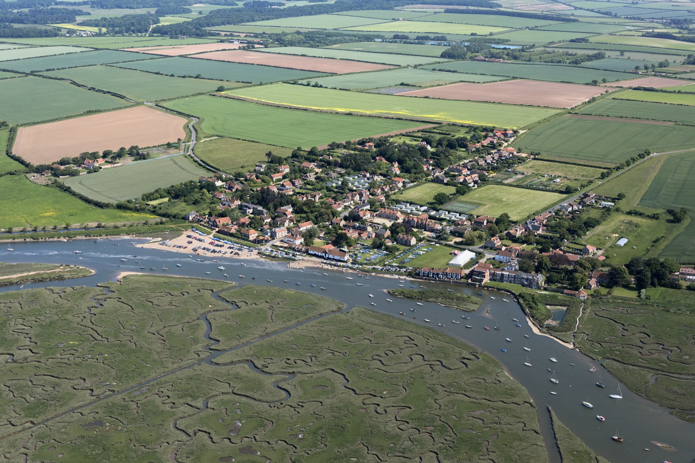
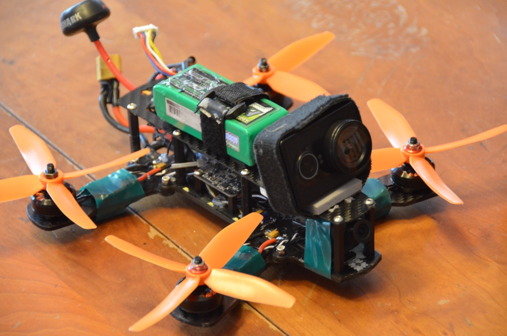
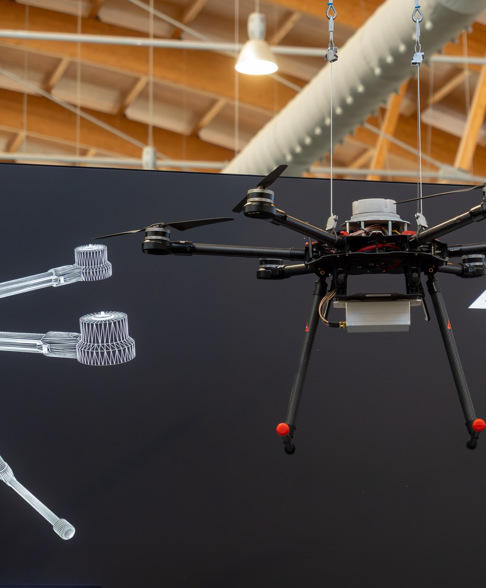
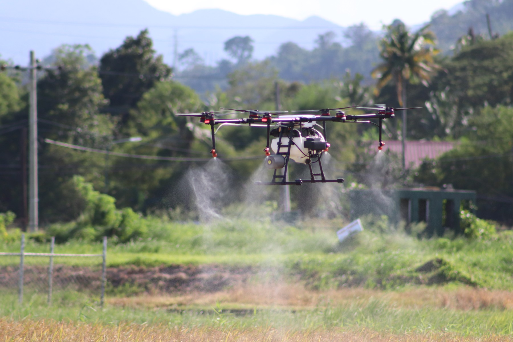
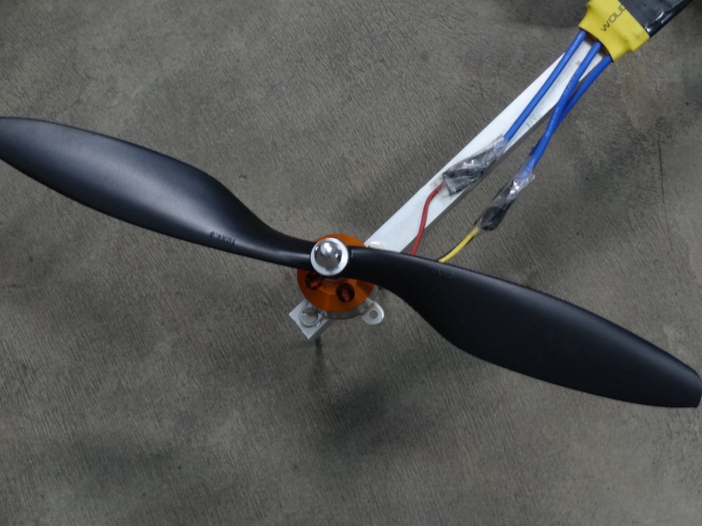
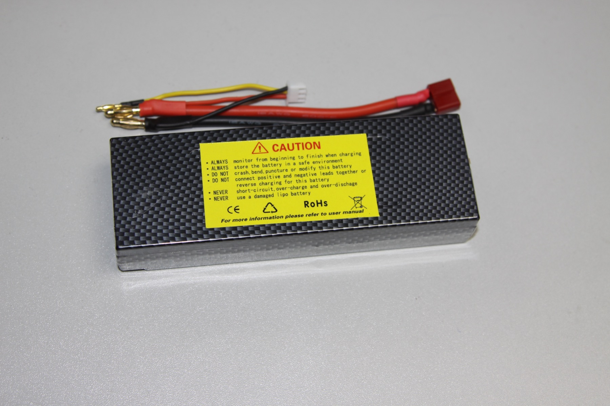
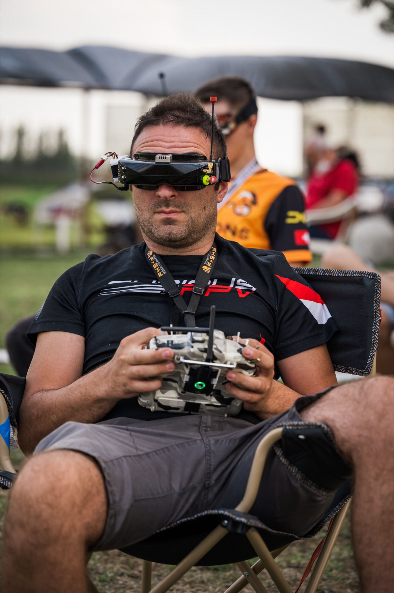
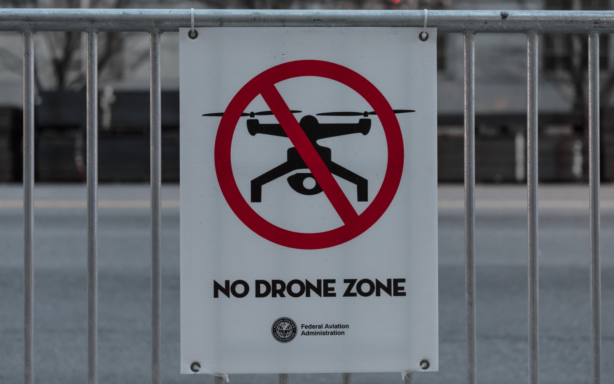
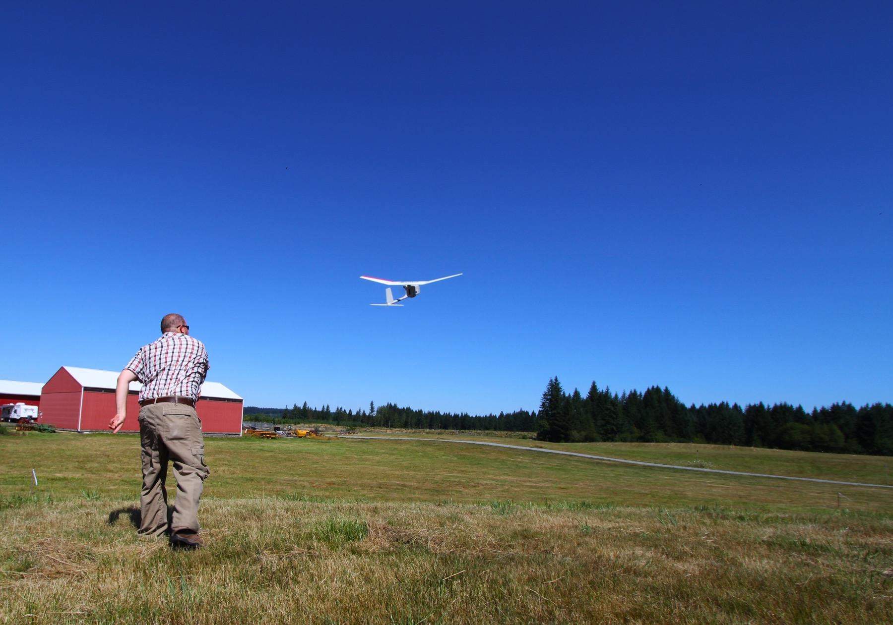

Il mondo dei droni
Come funzionano, come si fanno volare e, soprattutto, cosa dice la legge. Per chi parte da zero nei droni ma non nell'elettronica.
Edizione del 20 settembre 2026. Normativa europea e italiana verificata alla data indicata in testa a ogni capitolo.
Introduzione e mappa della guida
Questa guida esiste perché il mondo dei droni ha due porte d'ingresso, e quasi tutti entrano da quella sbagliata: comprano, volano, e scoprono le regole dopo. Qui si entra dall'altra: prima si capisce il sistema e la legge, poi si vola. Queste pagine spiegano a chi si rivolge la guida, come è costruita e come usarla.
- A chi si rivolge
- Come è organizzata
- Tre percorsi di lettura
- Le convenzioni grafiche
- Venti termini per cominciare
- Una nota sulle date
0.1 A chi si rivolge
Il lettore che abbiamo in mente non ha mai fatto volare un drone, ma sa cos'è un anello di retroazione, ha un'idea di come funziona un link radio e non si spaventa davanti a una sigla. Ha una formazione in telecomunicazioni ed elettronica, e basi di informatica. Questo cambia il modo di scrivere: non spieghiamo cosa sia un accelerometro o una modulazione a spettro espanso, spieghiamo come vengono usati in un drone e perché contano per volare in sicurezza e in regola.
Al tempo stesso, sulla normativa la guida parte da zero. Il regolamento europeo sui droni è un edificio logico coerente, ma con un vocabolario suo: categorie, sottocategorie, classi, operatori, piloti, zone geografiche. Lo costruiremo mattone per mattone, e ogni regola sarà accompagnata da uno scenario concreto in cui si applica. Ciò che invece non troverai sono confronti tra marche, modelli e prezzi: cambiano ogni stagione, e i criteri per scegliere non dipendono da loro.
0.2 Come è organizzata
La guida è divisa in nove capitoli, ciascuno in un file separato, più una scheda rapida da stampare. I capitoli sono pensati per essere letti in ordine, ma ognuno regge anche da solo, con rimandi espliciti agli altri quando serve.
- 01Cos'è un droneDefinizioni, terminologia, famiglie di droni, impieghi e perché il peso è il parametro che decide tutto.
- 02Anatomia e funzionamentoTelaio, motori, ESC, batterie, flight controller, sensori, come vola un quadricottero, modalità di volo e firmware.
- 03Radio, video e telemetriaLink di comando, video analogico e digitale, telemetria, bande e limiti di potenza in Europa, GNSS, Remote ID visto dal lato radio.
- 04Il quadro normativo europeoI regolamenti 2019/947 e 2019/945, le categorie Open, Specific e Certified, le sottocategorie A1-A3, le classi C0-C6, registrazione, formazione, Remote ID.
- 05Volare in ItaliaENAC, Regolamento UAS-IT, d-flight, attestati, zone geografiche, autorizzazioni, assicurazione, privacy, sanzioni.
- 06Categoria Specific e prospettivePanoramica di scenari standard, PDRA, SORA, LUC, categoria Certified e U-space.
- 07Volare in praticaPianificazione, meteo, checklist, gestione delle emergenze, manutenzione, segnalazioni, buone maniere.
- 08Percorso del neofita e appendiciPiano in quattro settimane, criteri per scegliere la prima classe di drone, glossario, acronimi, fonti.
- SRScheda rapidaDue pagine da stampare: tabella A1/A2/A3, diagramma «Posso volare qui?», checklist pre-volo.
0.3 Tre percorsi di lettura
Tutto in ordine
- Dal capitolo 1 all'8, poi la scheda rapida
- Circa sei ore di lettura
- Il percorso consigliato per chi vuole capire davvero
Solo le regole
- Capitoli 4, 5 e 7, poi la scheda rapida
- Circa due ore e mezza
- Per chi ha già familiarità con la tecnica o ha fretta di volare in regola
Solo la tecnica
- Capitoli 1, 2 e 3
- Circa due ore
- Per chi vuole capire la macchina prima di decidere se il mondo dei droni gli interessa
0.4 Le convenzioni grafiche
Lungo il testo incontrerai riquadri di sei tipi. Ognuno ha un colore e un'etichetta, così puoi decidere a colpo d'occhio se leggerlo subito o tornarci dopo.
Le sigle di classe e sottocategoria compaiono come etichette colorate, C0 C1 C2 per le classi e A1 A2 A3 per le sottocategorie, con gli stessi colori negli schemi. Ogni capitolo si chiude con un riquadro «In sintesi» e, nei capitoli normativi, con l'elenco delle fonti ufficiali.
0.5 Venti termini per cominciare
Il glossario completo è nel capitolo 8. Questi venti termini bastano per leggere il primo capitolo senza inciampare.
- Drone, UA, UAS
- Nomi diversi per la stessa cosa a livelli diversi: il drone è la macchina, UA è il suo nome nei regolamenti, UAS è il sistema completo con stazione di controllo e link.
- Multirotore, quadricottero
- Drone che vola grazie a più eliche verticali; con quattro eliche è un quadricottero, la forma più diffusa.
- Operatore UAS
- Chi è responsabile del drone e dell'operazione, e si registra.
- Pilota remoto
- Chi comanda il volo. Spesso la stessa persona dell'operatore.
- Categoria Open
- Il regime a basso rischio, senza autorizzazioni preventive, in cui vola quasi ogni hobbista.
- Sottocategoria A1, A2, A3
- Le tre fasce della Open, dalla più vicina alle persone alla più lontana.
- Classe C0-C6
- Etichetta di prodotto apposta dal costruttore, che dice in quali sottocategorie il drone può volare.
- MTOM
- Massa massima al decollo, batteria inclusa. La soglia dei 250 g è la più importante.
- VLOS
- Volo a vista: il pilota vede il drone a occhio nudo.
- FPV
- Volo con occhiali che mostrano l'immagine della camera di bordo.
- Registrazione
- Iscrizione dell'operatore nel registro nazionale, in Italia su d-flight, con un numero da apporre sul drone.
- Attestato A1/A3
- L'«esame online» del pilota, sulla piattaforma dell'ENAC: 40 domande, vale 5 anni.
- Zona geografica UAS
- Area in cui uno Stato vieta o limita il volo dei droni; in Italia si consulta sulla mappa di d-flight.
- Remote ID
- La «targa radio» del drone, trasmessa via Bluetooth o Wi-Fi e leggibile da chiunque.
- Geo-awareness
- Funzione con cui il drone conosce le zone geografiche e avverte il pilota.
- Flight controller
- Il computer di bordo che stabilizza il drone.
- ESC
- Il regolatore elettronico che alimenta ciascun motore.
- LiPo
- La chimica delle batterie ad alta corrente dei droni, potente e delicata.
- Failsafe, RTH
- Cosa fa il drone da solo se perde il collegamento: di norma torna al punto di decollo.
- ENAC, EASA
- L'autorità italiana e l'agenzia europea dell'aviazione civile.
0.6 Una nota sulle date
La normativa sui droni è giovane e cambia spesso: il regolamento europeo è stato modificato più volte dal 2020, il regolamento italiano ha avuto varie edizioni, le tariffe e le procedure di d-flight sono state riviste. Ogni capitolo normativo riporta in testa la data in cui le fonti sono state verificate e chiude con i link ufficiali. Quando in queste pagine leggi un importo, una scadenza o un numero di edizione, considera quella data e, in caso di dubbio, controlla la fonte. La struttura delle regole, invece, è stabile: le tre categorie, le sottocategorie, le classi e gli obblighi di base sono gli stessi dal 2021 e non ci sono segnali che debbano cambiare.
Cos'è un drone
Prima di parlare di eliche, radio e regolamenti conviene mettersi d'accordo sulle parole. Qui trovi che cosa è davvero un drone, da dove arriva, come si dividono le famiglie di macchine e perché la massa al decollo decide quasi tutto il resto.
- Una definizione che regge
- Da dove vengono
- Le famiglie
- A cosa servono
- Perché il peso conta così tanto
- Cosa serve per cominciare
- In sintesi
Fonti normative verificate il 20 settembre 2026.
1.1 Una definizione che regge
Un drone è un aeromobile senza pilota a bordo, comandato da remoto oppure capace di eseguire da solo una parte della missione. La definizione è larga di proposito: ci stanno dentro un quadricottero pieghevole da poche centinaia di grammi e un velivolo ad ala fissa da 25 kg. Quello che li accomuna non è la forma né il livello di automazione: è il fatto che il posto di pilotaggio sia altrove.
La parola “drone” però indica solo l'oggetto che vola. La normativa e la letteratura tecnica ragionano in termini di sistema, perché senza le parti a terra quell'oggetto non è governabile: la macchina, il dispositivo con cui la comandi e il collegamento radio che tiene insieme i due.
Le sigle cambiano da un documento all'altro e conviene saperle leggere. Drone è il termine dell'uso comune e non compare nei testi normativi. UA e UAS sono i termini del regolamento europeo: è il vocabolario che useremo per tutta la guida. RPAS, sistema aeromobile a pilotaggio remoto, è la forma preferita nei documenti dell'aviazione civile internazionale: insiste sul fatto che un pilota remoto ci sia e sia responsabile, ed esclude quindi i mezzi completamente autonomi.
In Italia sentirai ancora SAPR e APR, insieme all'espressione «mezzo aereo a pilotaggio remoto»: sono i termini dei regolamenti nazionali in vigore prima del 2021. Non sono errori, ma appartengono a un impianto superato. Se un documento usa quel lessico, controlla la data prima di fidarti del contenuto.
Un'ultima distinzione, che tornerà spesso. L'operatore UAS è la persona fisica o giuridica responsabile dell'impiego del sistema: si registra, tiene le procedure, risponde di quello che succede. Il pilota remoto è chi materialmente comanda il volo. Se voli per conto tuo le due figure coincidono; dentro un'azienda o un'associazione no, e sapere chi è chi cambia molte risposte. Nel capitolo 4 vedremo quali obblighi ricadono su ciascuno.
1.2 Da dove vengono
L'idea di far volare un aeromobile senza nessuno a bordo è vecchia quanto la radio. Per buona parte del Novecento è rimasta in ambito militare: prima bersagli radiocomandati per addestrare l'artiglieria contraerea, poi velivoli da ricognizione. Erano macchine grandi e costose, senza alcun rapporto con quello che oggi tieni in una borsa.
Il mondo civile restava fermo al modellismo, e non per mancanza di idee. Un multirotore è instabile per costruzione: non ha superfici mobili e l'assetto si mantiene variando in continuo la spinta dei singoli rotori, con correzioni da calcolare centinaia di volte al secondo che nessuna mano umana può fare. Finché quel calcolo non è diventato economico, il multirotore è rimasto una curiosità da laboratorio.
La svolta arriva negli anni Duemila e non nasce nell'aeronautica: nasce nella filiera dei telefoni cellulari. I sensori inerziali MEMS, accelerometri e giroscopi in pochi millimetri quadrati, diventano componenti da pochi euro. Le batterie ai polimeri di litio offrono densità di energia e correnti di scarica prima impensabili, i motori brushless danno spinta regolabile con precisione e senza parti che si consumano, i ricevitori GNSS e i microcontrollori completano il quadro. Messi insieme rendono possibile una macchina che si stabilizza da sola e costa quanto un elettrodomestico.
Negli anni Dieci l'uso esplode, prima tra gli appassionati e quasi subito nel lavoro. Le regole arrivano dopo e in ordine sparso: ogni Stato scrive le proprie, con soglie diverse, e volare oltre confine diventa un problema. In Italia l'ENAC pubblica nel 2013 il regolamento «Mezzi aerei a pilotaggio remoto», riferimento nazionale per anni.
Tra il 2019 e il 2021 il quadro viene riscritto a livello europeo. Due regolamenti, uno sulle operazioni e uno sui requisiti dei prodotti, sostituiscono le normative nazionali con un impianto unico, applicabile dal 31 dicembre 2020. Da quel momento le regole di base sono le stesse in tutta l'Unione, e agli Stati restano la gestione dello spazio aereo e poco altro. È il quadro dentro cui ti muovi oggi, ed è il tema dei capitoli 4 e 5.
1.3 Le famiglie
Il modo in cui un mezzo si tiene in aria determina quasi tutto il resto: autonomia, area coperta, spazio necessario per partire, tipo di missione. Le famiglie principali sono poche e si distinguono a colpo d'occhio.
Il multirotore è quello che quasi tutti chiamano drone. Genera portanza con eliche a passo fisso rivolte verso l'alto e controlla l'assetto variando la velocità dei motori, senza alcun comando meccanico. Si chiama tricottero, quadricottero, esacottero o ottocottero a seconda del numero di rotori: quattro sono il compromesso più diffuso, sei o otto servono a portare più carico e a sopravvivere alla perdita di un motore. I pregi sono il volo stazionario e la semplicità meccanica. Il difetto è l'efficienza, perché tutta l'energia serve a restare in aria: l'autonomia tipica sta tra i 20 e i 40 minuti, e scende con vento, carico e freddo.


L'ala fissa funziona come un aliante motorizzato: la portanza viene dall'ala e richiede velocità di avanzamento. Il motore serve solo a vincere la resistenza, non a sostenere il peso, e questo cambia completamente i numeri. L'autonomia si misura in ore invece che in minuti e una singola missione copre aree molto estese, il che la rende la scelta naturale per mappatura e sorveglianza. Il prezzo è la rigidità operativa: serve spazio libero, un lancio a mano o una catapulta, un atterraggio planato, e il mezzo non può fermarsi a guardare un dettaglio.
I VTOL ibridi prendono il meglio delle due soluzioni. Decollano in verticale con rotori dedicati, poi ruotano i motori o ne accendono altri e proseguono in crociera sull'ala. Non hanno bisogno di pista e conservano gran parte dell'efficienza dell'ala fissa, ma pagano in peso e complessità: ci sono due modalità di volo e una transizione tra le due, il momento più delicato della missione.
Gli elicotteri radiocomandati hanno un rotore principale a passo variabile e un rotore di coda, come i loro equivalenti con pilota a bordo. A parità di massa offrono volo stazionario ed efficienza migliore di un multirotore, ma la meccanica va regolata e manutenuta e il pilotaggio richiede molta più pratica. Restano una nicchia, soprattutto in agricoltura. Esistono poi forme meno comuni, come i dirigibili per riprese al chiuso, che seguono le stesse logiche di base.


| Famiglia | Come sta in aria | Autonomia tipica | Punto forte | Limite | Uso tipico |
|---|---|---|---|---|---|
| Multirotore | Spinta delle eliche, assetto gestito dall'elettronica | 20-40 minuti | Decolla ovunque e resta fermo in aria | Efficienza bassa, autonomia corta | Riprese, ispezioni, rilievi su area limitata |
| Ala fissa | Portanza dell'ala in avanzamento | Da una a diverse ore | Copre molta area con poca energia | Non può fermarsi, serve spazio per partire | Mappatura e sorveglianza di grandi superfici |
| VTOL ibrido | Rotori in verticale al decollo, ala in crociera | Intermedia, vicina all'ala fissa | Nessuna pista e lunga percorrenza | Peso, complessità, transizione delicata | Rilievi estesi da luoghi senza spazio libero |
| Elicottero | Rotore principale a passo variabile | Variabile con la taglia | Carico utile alto per le dimensioni | Meccanica complessa, pilotaggio difficile | Agricoltura e applicazioni specialistiche |
Tabella 1.1 Le quattro famiglie a confronto. Le autonomie sono ordini di grandezza e dipendono da massa, carico, vento e temperatura.
1.4 A cosa servono
Il motivo per cui la maggior parte delle persone compra un drone è fotografare e riprendere dall'alto: un punto di vista che prima richiedeva un elicottero. Le macchine pensate per questo hanno una camera su sospensione cardanica, modalità di volo assistite e un'autonomia sufficiente a costruire qualche inquadratura, non missioni lunghe.
Il volo FPV è una disciplina a parte, con una comunità e una cultura tecnica proprie. Il pilota indossa degli occhiali e vede in tempo reale l'immagine della camera di bordo: non osserva il mezzo dall'esterno, ci sta dentro. Da qui nascono il freestyle, il volo acrobatico intorno a strutture e paesaggi, e il racing su circuiti delimitati da porte. Sono mezzi costruiti per la reattività, spesso assemblati dal pilota, e con vincoli operativi particolari proprio perché chi vola non guarda il cielo.
Sul fronte professionale l'elenco è lungo. L'ispezione di infrastrutture, dalle linee elettriche ai ponti alle coperture industriali, evita ponteggi e lavori in quota. L'agricoltura di precisione usa camere multispettrali per capire dove intervenire invece di trattare tutto. Il rilievo fotogrammetrico produce modelli tridimensionali e ortofoto da centinaia di scatti sovrapposti. Ricerca e soccorso, protezione civile e forze dell'ordine usano sensori termici per trovare persone e seguire eventi in corso. Il cinema ha sostituito molte riprese da gru ed elicottero. Consegne e trasporto, invece, in Europa sono ancora in gran parte sperimentali.

Un punto da fissare subito: la stessa identica macchina può ricadere in situazioni normative molto diverse a seconda di dove e come la usi. A determinare le regole non è il drone da solo, ma la combinazione tra le sue caratteristiche, il luogo del volo e il tipo di operazione. Lo stesso quadricottero può essere legittimo sopra un campo disabitato e non ammissibile sopra una folla o vicino a un aeroporto. I capitoli 4 e 6 spiegano come si legge questa combinazione.
1.5 Perché il peso conta così tanto
Aprendo un qualsiasi documento normativo la prima cosa che troverai sono soglie di massa. Il parametro si chiama MTOM, massa massima al decollo, ed è il valore del mezzo pronto a volare. La ragione sta nella fisica elementare: quello che un aeromobile può fare a persone e cose in caduta o in urto dipende dall'energia che porta con sé.
L'energia cinetica vale E = ½·m·v². Un mezzo da 249 g che impatta a 15 m/s trasporta circa 28 J; uno da 900 g alla stessa velocità ne trasporta circa 101 J, tre volte e mezza tanto. Poiché la velocità entra al quadrato, raddoppiarla quadruplica l'energia. Un mezzo pesante che scende veloce non è un po' più pericoloso di uno leggero: è un altro ordine di problema.
Le soglie che incontrerai più spesso sono quattro: 250 g, 900 g, 4 kg e 25 kg. Segnano i confini tra livelli di rischio e quindi tra insiemi di regole diverse su quanto puoi avvicinarti alle persone, su cosa devi avere e su cosa devi saper fare. Vale la pena memorizzarle: sono il primo filtro con cui guarderai qualsiasi mezzo. Il capitolo 4 dice cosa comporta stare da una parte o dall'altra.
1.6 Cosa serve per cominciare
L'idea che basti comprare il mezzo, caricare la batteria e volare è la premessa della maggior parte dei problemi. Non perché le regole siano proibitive, ma perché stai mettendo in aria un oggetto motorizzato in uno spazio condiviso, e la responsabilità è tua dal primo decollo.
Servono quattro cose, in quest'ordine. Capire come funziona il sistema che stai comandando, argomento dei capitoli 2 e 3. Conoscere le regole che si applicano a te e al tuo mezzo, nei capitoli 4 e 5. Formarti, cosa che per la fascia di ingresso significa un percorso online con un attestato finale. Assicurarti per la responsabilità civile e scegliere un mezzo adatto a quello che vuoi fare davvero. Il capitolo 8 mette questi passaggi in sequenza.
In sintesi
- Un drone è un aeromobile senza pilota a bordo. Quello che conta per le regole non è la macchina ma il sistema: aeromobile, stazione di controllo e link di comando e controllo.
- UA e UAS sono i termini europei. RPAS viene dai documenti internazionali, SAPR e APR dai regolamenti italiani precedenti al 2021: se li leggi, verifica la data.
- L'operatore UAS è chi ha la responsabilità, il pilota remoto è chi comanda. Possono essere la stessa persona, ma non sono lo stesso ruolo.
- I droni civili nascono quando sensori MEMS, batterie al litio, motori brushless e ricevitori GNSS diventano economici grazie alla filiera degli smartphone. Le regole nazionali frammentate sono poi state sostituite da un impianto europeo unico, applicabile dal 31 dicembre 2020.
- Multirotore per fermarsi in aria e partire da spazi piccoli, ala fissa per coprire molta area, VTOL ibrido per avere entrambe le cose pagandole in complessità.
- La stessa macchina cambia inquadramento a seconda di dove e come la usi: il mezzo da solo non basta a dire se un volo è ammesso.
- La massa al decollo decide quasi tutto, perché l'energia in gioco cresce con la massa e con il quadrato della velocità. Le soglie da ricordare sono 250 g, 900 g, 4 kg e 25 kg.
Anatomia e funzionamento
Un drone è un insieme di sottosistemi che si reggono a vicenda: una struttura rigida, quattro azionamenti trifase, una batteria che eroga correnti da avviamento d'auto e un calcolatore che corregge l'assetto migliaia di volte al secondo. Questo capitolo apre la macchina e spiega cosa fa ogni pezzo e quali numeri contano in una scheda tecnica.
- Vista d'insieme
- Il telaio
- La propulsione
- L'alimentazione
- Il cervello e i sensori
- Come si muove
- Modalità di volo
- Il software
- In sintesi
Fonti normative verificate il 20 settembre 2026.
2.1 Vista d'insieme
Come caso di studio usiamo il quadricottero, la macchina più diffusa: la stessa architettura copre il giocattolo da interni, il drone pieghevole da 249 g e il mezzo professionale da rilievo. Ha quattro rotori a passo fisso e nessuna superficie mobile, cioè un solo attuatore ripetuto quattro volte.
La semplicità meccanica si paga sul controllo: senza elettronica attiva un quadricottero non resta in aria un secondo, perché è instabile su tutti e tre gli assi. Tutto ciò che segue esiste per chiudere quell'anello.
- Struttura. Telaio, bracci e coperture: tengono i motori a distanza fissa dal baricentro.
- Propulsione. Quattro gruppi motore ed elica con i rispettivi regolatori, unico organo di comando.
- Alimentazione. Batteria e distribuzione di potenza: decidono autonomia, peso e gran parte dei rischi.
- Controllo. Il flight controller, microcontrollore più unità inerziale, che stabilizza la macchina.
- Navigazione. Ricevitore satellitare, barometro, magnetometro e sensori ottici: dicono dove sei.
- Radio. Comando, video e telemetria con le antenne, argomento del capitolo 3.
- Carico utile. Camera su sospensione cardanica o sensori, integrati o intercambiabili.
2.2 Il telaio
Il telaio deve essere leggero e rigido insieme. La fibra di carbonio domina per rigidezza specifica e costo, ma è conduttiva: attenua i segnali radio e fa ombra al ricevitore satellitare, quindi antenne e modulo GNSS si montano fuori dalle piastre. Le plastiche tecniche, dal nylon caricato al policarbonato, assorbono l'impatto e sono trasparenti alle radiofrequenze: da qui i gusci dei droni consumer. Magnesio e alluminio restano ai bracci dei mezzi professionali.
I bracci hanno tre disposizioni classiche. Nella “+” un braccio punta in avanti, quindi ogni comando di rollio o beccheggio agisce su due soli motori. Nella X stanno a 45° dagli assi: tutti e quattro i motori contribuiscono a ogni comando e la camera guarda fra due bracci, ed è per questo che la X ha vinto. La H allunga il corpo in un rettangolo e guadagna spazio interno. La taglia si esprime con la diagonale fra gli assi di due motori opposti: una macchina da 5 pollici di elica sta intorno ai 220 mm, una da 7 pollici sui 300 mm. I bracci pieghevoli dei droni consumer riducono l'ingombro al prezzo di una cerniera, un punto meno rigido.
La rigidezza non è pignoleria. Motori ed eliche eccitano la struttura alla frequenza di rotazione e ai suoi multipli, e il giroscopio al centro legge quella vibrazione come una rotazione vera. L'unità inerziale campiona a qualche kHz, quindi le componenti sopra la frequenza di Nyquist rientrano in banda come alias, indistinguibili dal segnale. Le contromisure sono meccaniche: eliche bilanciate, telaio rigido, scheda su smorzatori.
2.3 La propulsione
Il motore brushless
I droni usano motori sincroni a magneti permanenti di tipo outrunner: lo statore avvolto sta fermo al centro, la campana esterna con i magneti è il rotore e porta direttamente l'elica. Rispetto a un inrunner dà più coppia e meno giri, che è ciò che serve per trascinare un'elica senza riduttore.
La sigla dimensionale descrive lo statore: 2207 significa 22 mm di diametro e 7 mm di altezza del pacco lamellare, e uno statore più alto dà più coppia e più peso. L'altro numero di targa è la costante KV, i giri al minuto per volt a vuoto: un 2207 da 1750 KV a 22,2 V nominali gira intorno a 39.000 giri/min. Poiché la costante di coppia è l'inverso di quella di velocità, KV alto significa molti giri e poca coppia per ampere: eliche piccole e KV alti sulle macchine agili, il contrario sui mezzi da carico.
Il regolatore elettronico
Il regolatore, o ESC, è un inverter trifase che sintetizza le tre fasi alla frequenza giusta, modulando la tensione media con la larghezza degli impulsi.
Il comando arriva su un solo filo: un tempo un impulso analogico da 1000 a 2000 µs ereditato dal modellismo, oggi i protocolli digitali della famiglia DShot. Il valore di spinta viaggia in un pacchetto di 16 bit, con 11 bit di comando, un bit di richiesta telemetria e 4 bit di controllo a ridondanza ciclica, fra 150 e 1200 kbit/s. Il pacchetto è verificato e, nelle varianti bidirezionali, riporta il numero di giri effettivo, usato per filtrare le vibrazioni alla frequenza esatta.
Sulle macchine compatte i quattro regolatori stanno su una sola scheda, detta 4-in-1, impilata sotto il flight controller. Le correnti non sono trascurabili: in transitorio un motore da 5 pollici assorbe decine di ampere e una manovra brusca porta il totale oltre il centinaio, quindi si dimensiona sui picchi.
Le eliche
L'elica si identifica con tre numeri, per esempio 5x4,3x3: diametro in pollici, passo in pollici, numero di pale. Il passo è l'avanzamento teorico in un giro, quindi passo alto significa più velocità e più corrente. A parità di geometria la spinta cresce con il quadrato dei giri e la quarta potenza del diametro, la potenza assorbita con il cubo e la quinta: un disco grande che gira piano consuma meno, ed è per questo che i droni da lunga autonomia hanno eliche grandi.
I materiali vanno dal policarbonato caricato, elastico e perdonante, ai compositi in carbonio, rigidi ed efficienti ma distruttivi in caso di contatto. L'elica va bilanciata: uno squilibrio di frazioni di grammo a 20.000 giri/min scuote tutta la macchina. Sono materiale di consumo: porta un ricambio completo e monta le protezioni negli ambienti chiusi. Il senso di rotazione è alternato fra le due diagonali e i mozzi sono filettati di conseguenza.

| Componente | Funzione | Parametri chiave |
|---|---|---|
| Batteria | Fornisce energia e corrente di picco | Tensione nominale, energia in Wh, corrente erogabile |
| Regolatore | Converte la continua in tre fasi | Corrente continua e di picco, tensione massima, protocollo |
| Motore | Trasforma la potenza elettrica in coppia | Sigla dello statore, KV, resistenza di fase, peso |
| Elica | Trasforma la coppia in spinta | Diametro, passo, numero di pale, materiale |
2.4 L'alimentazione
Due chimiche si dividono il campo. Le celle ai polimeri di litio, dette LiPo, hanno resistenza interna bassissima e reggono correnti enormi rispetto alla capacità: sono obbligate quando conta la potenza istantanea. Le celle agli ioni di litio cilindriche immagazzinano circa il doppio di energia per chilogrammo ma erogano correnti molto più modeste, e si usano dove il volo è a potenza moderata: ali fisse, mappatura, multirotori da lunga autonomia.
I valori di tensione per cella vanno imparati a memoria: 3,7 V nominali, 4,2 V a piena carica, 3,5 V come soglia prudente per rientrare, 3,0 V come limite oltre il quale la cella si danneggia. Le celle si collegano in serie e la sigla lo dichiara: 4S sono quattro celle per 14,8 V nominali e 16,8 V a piena carica, fino ai 6S delle macchine da prestazione. Il parallelo, indicato con P, somma le capacità.
La capacità si dà in milliampereora, ma il numero che conta è l'energia in wattora, cioè tensione nominale per capacità in ampereora. Un pacco 4S da 1500 mAh contiene 14,8 × 1,5 = 22,2 Wh. Se il volo assorbe in media 250 W l'energia teorica basta per poco più di cinque minuti; usando l'80% del pacco restano poco più di quattro minuti.
La corrente massima si esprime con il C-rating, un moltiplicatore della capacità: 100C su un pacco da 1500 mAh significa 1,5 × 100 = 150 A dichiarati. Prendilo con prudenza, perché è misurato per pochi secondi a pacco pieno. L'indicatore onesto è la caduta di tensione sotto carico.

Sui droni consumer il pacco è una smart battery: un'elettronica integrata misura tensione di cella, corrente e temperatura, bilancia in carica, conta i cicli e si autoscarica alla tensione di conservazione dopo alcuni giorni di inattività. Sui pacchi da modellismo lo fai tu: carica sempre in modalità bilanciata e, se non voli entro un giorno o due, porta le celle a 3,8-3,85 V. Al freddo la resistenza interna sale e l'autonomia cala, quindi in inverno i pacchi si tengono al caldo.
| Caratteristica | LiPo | Li-ion cilindriche |
|---|---|---|
| Energia specifica | Media: privilegia la potenza | Circa doppia a parità di peso |
| Scarica | Molto alta, decine di C | Bassa, pochi C continuativi |
| Resistenza interna | Bassissima, poca caduta | Più alta, caduta sensibile ai picchi |
| Al freddo | Degrada, ma regge i picchi | Soffre di più |
| Uso tipico | Multirotori acrobatici, FPV, droni compatti | Ali fisse, mappatura, lunga autonomia |
2.5 Il cervello: flight controller e sensori
Il flight controller è una scheda piccola, spesso 36 mm di lato, costruita intorno a un microcontrollore a 32 bit della famiglia ARM Cortex-M. Non serve potenza di calcolo, serve determinismo: poche centinaia di microsecondi di ritardo contano più di qualche MHz.
Il sensore fondamentale è l'unità di misura inerziale, o IMU: giroscopio e accelerometro a tre assi in un integrato MEMS, campionati a qualche migliaio di campioni al secondo. Il giroscopio dà la velocità angolare e regge il controllo di assetto; l'accelerometro ritrova la verticale, perché a macchina ferma legge la gravità. Il giroscopio da solo deriva, l'accelerometro da solo è inutilizzabile in volo: il primo comanda sul breve periodo, il secondo fa da riferimento lento.
Il barometro ricava dalla pressione assoluta una quota relativa, ma risente delle variazioni meteorologiche, del vento attorno al telaio e della scia delle eliche: dà una quota affidabile su tempi brevi e una deriva lenta su tempi lunghi. Il magnetometro fornisce la direzione della prua ed è il più facile da disturbare, perché un cavo che porta decine di ampere o l'armatura di un tetto deformano il campo locale: da qui i frequenti errori di bussola. Il ricevitore GNSS dà posizione e velocità rispetto al suolo ed è trattato nel capitolo 3.
Vicino al terreno servono altri sensori. L'optical flow è una camera rivolta verso il basso che misura lo spostamento dell'immagine fra un fotogramma e l'altro: abbinata a un telemetro che dà la scala, stima la velocità orizzontale e tiene la posizione senza satelliti, purché ci siano luce e texture al suolo. I telemetri, a ultrasuoni o a tempo di volo, si perdono su erba alta e soffrono il sole diretto; gli stessi principi, in versione stereoscopica, alimentano i sistemi anticollisione dei droni consumer.

Queste letture, discordanti e rumorose, confluiscono in un filtro di Kalman esteso, che mantiene assetto, velocità e posizione con la relativa incertezza e li corregge a ogni misura, pesando ciascun sensore secondo quanto è affidabile. Sopra lo stimatore sta il controllo, in anelli PID in cascata: il più interno regola la velocità angolare e gira alla frequenza del giroscopio, il suo riferimento arriva dall'anello di assetto, e sopra ancora, quando la modalità lo prevede, un anello di velocità e uno di posizione a poche decine di hertz. Se il segnale satellitare degrada, i due anelli esterni si aprono e la macchina scala di modalità.
2.6 Come si muove
Quattro rotori a passo fisso, due orari e due antiorari, con le eliche opposte sulla diagonale che girano nello stesso verso. Ogni rotore produce una spinta verso l'alto e, per reazione, una coppia sul telaio opposta al proprio verso di rotazione.
In volo stazionario le quattro spinte eguagliano il peso e le coppie si annullano a due a due. Per salire il controllo aumenta le quattro spinte insieme. Per inclinarsi aumenta la spinta sui due motori di un lato e la riduce sull'altro: nasce una coppia che ruota la macchina di rollio o di beccheggio. Il vettore di spinta non è più verticale, e la sua componente orizzontale spinge il drone avanti o di lato. Un quadricottero non può traslare senza inclinarsi, e inclinarsi sottrae al sostentamento parte della spinta.
L'imbardata sfrutta le coppie di reazione: il controllo accelera la diagonale che gira in un verso e rallenta l'altra della stessa quantità, così la spinta totale e la quota non cambiano, ma le coppie non si annullano più e la macchina ruota attorno all'asse verticale. È la manovra più lenta, perché dipende dall'attrito aerodinamico delle eliche.
Nessuna di queste manovre coinvolge parti mobili oltre ai rotori: non ci sono alettoni, timoni né passo variabile. Tutto dipende dalla rapidità con cui i motori cambiano regime, cioè dall'inerzia del gruppo motore-elica e dalla banda del regolatore.
Esacotteri e ottocotteri seguono la stessa logica con sei o otto rotori, e la ragione è la ridondanza: con un motore in avaria restano spinta e coppie sufficienti perché, secondo configurazione e carico, la macchina resti controllabile fino a un atterraggio di emergenza. Su un quadricottero la perdita di un motore significa quasi sempre la caduta.
2.7 Modalità di volo e automatismi
Le modalità di volo sono livelli diversi di automazione sopra lo stesso hardware. Cambia solo quale anello di controllo riceve i tuoi comandi, e quanto lavoro resta a te.
| Modalità | Cosa comanda lo stick | Se rilasci gli stick |
|---|---|---|
| Manuale o acro | Velocità angolare sui tre assi | Mantiene l'inclinazione che ha |
| Stabilizzata o angle | Angolo di inclinazione, entro un limite | Torna orizzontale, ma va alla deriva |
| Posizione o GNSS hold | Velocità rispetto al suolo | Si ferma e tiene posizione e quota |
La modalità manuale, chiamata acro, passa i comandi all'anello più interno: gli stick chiedono velocità di rotazione e la macchina non si raddrizza da sola. È innaturale all'inizio e indispensabile per il volo FPV, perché è l'unica che consente manovre oltre l'assetto orizzontale. La stabilizzata inserisce l'anello di assetto, quindi lo stick corrisponde a un angolo entro un limite, ma non tiene la posizione: senza satelliti il vento porta via il drone. La modalità di posizione chiude anche gli anelli di velocità e posizione, e al centro degli stick il drone si pianta in aria.
Sopra le modalità stanno gli automatismi. Il rientro automatico, o RTH, riporta la macchina a un punto memorizzato al decollo, ed è la reazione tipica del failsafe, la logica che decide cosa fare quando il collegamento di comando si interrompe: le alternative sono restare fermi, atterrare o rientrare, e la scelta dipende dal contesto, come spiega il capitolo 7. Le missioni a waypoint percorrono una rotta programmata, ed è così che si eseguono i rilievi fotogrammetrici. Le funzioni follow-me tengono il soggetto nell'inquadratura, e il geofence è un limite software di quota e distanza, accompagnato da banche dati delle zone in cui il volo è limitato.
2.8 Il software
Il comportamento di un drone è deciso dal firmware più che dall'hardware, e il panorama si divide in due mondi. Da un lato i firmware aperti su schede generiche: Betaflight è lo standard dell'FPV, con filtri configurabili e registrazione dei dati di volo per l'analisi a terra; iNav aggiunge navigazione satellitare, rientro automatico e waypoint; ArduPilot e PX4 giocano un altro campionato, con stimatori sofisticati e integrazione con un calcolatore di bordo, e sono la base dei droni autonomi e professionali. Tutti si configurano da personal computer, e gli ultimi due parlano MAVLink, il protocollo descritto nel capitolo 3.
Dall'altro lato i firmware proprietari dei droni consumer integrati: chiusi, non configurabili oltre le opzioni dell'app, aggiornati via applicazione. In cambio offrono un'integrazione che nessun assemblaggio raggiunge: sensori, radio, camera, batteria e limiti di volo sono collaudati come un unico prodotto. Nel firmware risiedono anche la consapevolezza geografica e i moduli per l'identificazione a distanza.
Queste ultime non sono dettagli tecnici: marcature di classe, identificazione a distanza e consapevolezza geografica dipendono da cosa gira dentro la macchina, e un aggiornamento può cambiare ciò che il drone è autorizzato a fare. Il quadro è nel capitolo 4. La regola pratica è aggiornare a casa, mai in campo il giorno del volo; vale anche per l'app di controllo, che spesso rifiuta di far decollare il drone finché non è allineata al firmware. Un simulatore, infine, costa quanto un'elica e ti fa sbagliare mille volte senza conseguenze.
In sintesi
- Il quadricottero è semplice e intrinsecamente instabile: vola solo perché un anello di controllo lo corregge migliaia di volte al secondo.
- La taglia si misura in diagonale fra motori opposti, e la X domina perché tutti e quattro i motori agiscono su ogni asse.
- Le vibrazioni entrano nel giroscopio e degradano il controllo; sopra la frequenza di Nyquist nessun filtro le recupera.
- Motore e regolatore formano un azionamento trifase sensorless: il KV lega giri e coppia, l'elica traduce coppia in spinta secondo leggi di scala ripide.
- Della batteria contano l'energia in wattora, la tensione per cella e la caduta sotto carico; il C-rating dichiarato è ottimistico.
- Le celle al litio non perdonano sovraccarica e rigonfiamenti: carica bilanciata e sorvegliata, conservazione a 3,8-3,85 V per cella.
- Il controllo è una cascata di anelli, dal più veloce sulla velocità angolare al più lento sulla posizione, alimentata da sensori imperfetti.
- Le modalità di volo differiscono solo per quale anello riceve i tuoi comandi: i nomi cambiano fra produttori, la logica no.
Radio, video e telemetria
Un drone è un sistema radio con le eliche. Tra te e la macchina corrono almeno tre collegamenti, comandi, video e telemetria, più i segnali dei satelliti che scendono e il Remote ID che sale verso chiunque voglia ascoltarlo. Questo è il capitolo in cui giochi in casa: parleremo di bande, potenze, protocolli e latenze, e di come le regole europee sullo spettro decidono cosa puoi comprare e usare.
- Tre collegamenti e due segnali
- Lo spettro disponibile in Europa
- Il link di comando
- Il link video
- Telemetria e protocolli
- Il posizionamento satellitare
- Il Remote ID visto dal lato radio
- Interferenze e coesistenza
Fonti tecniche e normative verificate il 20 settembre 2026.
3.1 Tre collegamenti e due segnali
Lo schema della Figura 3.1 mostra tutto ciò che viaggia via radio in un volo tipico. Il link di comando porta i tuoi stick al flight controller, decine o centinaia di volte al secondo: è il collegamento che non può cadere, e infatti tutta la sua progettazione ruota intorno alla robustezza. Il link video porta l'immagine della camera ai tuoi occhi, su uno schermo o negli occhiali: è quello che consuma più banda e tollera meglio un'interruzione. La telemetria torna indietro dal drone: tensione della batteria, posizione, quota, qualità del link stesso. Nei sistemi integrati dei droni consumer i tre collegamenti condividono un unico link digitale bidirezionale; nel mondo FPV sono spesso tre sistemi separati, ciascuno con la sua banda e la sua antenna.
A questi si aggiungono due segnali che non controlli. I segnali GNSS scendono dai satelliti e danno al drone posizione e velocità. Il Remote ID parte dal drone e annuncia in chiaro chi sei e dove sei, a chiunque abbia uno smartphone a portata (sezione 3.7).
3.2 Lo spettro disponibile in Europa
Un drone hobbistico non ha una licenza di frequenza: usa le bande destinate agli apparati a corto raggio (SRD) e alle reti locali senza fili, con i limiti di potenza fissati dalle norme armonizzate ETSI e dalla Raccomandazione ERC 70-03. Sono limiti bassi, pensati per far convivere milioni di dispositivi, e valgono in tutta l'Unione; l'Italia li recepisce nel Piano Nazionale di Ripartizione delle Frequenze. La Figura 3.2 e la Tabella 3.1 li riassumono.
| Banda | Uso tipico | Limite in Europa | Norma |
|---|---|---|---|
| 433 MHz | Telemetria a lungo raggio | 10 mW e.r.p. con duty cycle ≤ 10%, oppure 1 mW senza limite | ERC 70-03, EN 300 220 |
| 863-870 MHz | Comando a lungo raggio (LoRa) | 25 mW e.r.p. nelle sottobande principali con duty cycle 0,1-1%; 500 mW e.r.p. al 10% solo in 869,4-869,65 MHz | ERC 70-03, EN 300 220 |
| 2,4 GHz | Radiocomando, video digitale, Wi-Fi | 100 mW e.i.r.p. | EN 300 328 |
| 5,17-5,25 GHz | Comando e video dei droni (banda dedicata dal 2022) | 200 mW e.i.r.p. | Decisione (UE) 2022/179 |
| 5,15-5,35 / 5,47-5,725 GHz | Wi-Fi 5 GHz | 200 mW solo al chiuso / 1 W con DFS | EN 301 893 |
| 5,725-5,875 GHz | Video FPV analogico e digitale | 25 mW e.i.r.p. | EN 300 440 |
Tabella 3.1 Bande e limiti per l'uso senza licenza in Europa. I valori sono quelli delle norme al 20 settembre 2026; le sottobande degli 868 MHz hanno limiti diversi tra loro e vanno lette nella norma.
Due confronti spiegano molte cose che leggerai nei forum. Negli Stati Uniti la banda dei 900 MHz va da 902 a 928 MHz con potenze fino a 1 W: in Europa quella banda non esiste per gli SRD, e l'equivalente sono i 868 MHz con 25 mW e vincoli di duty cycle. Un modulo «915» acceso in Italia trasmette fuori banda. Sui 5,8 GHz la FCC ammette potenze dell'ordine del watt; in Europa il limite è 25 mW. Un trasmettitore video da 600 mW, comunissimo nei prodotti per il mercato americano, supera il limite europeo di oltre venti volte, qualunque sia l'etichetta sulla scatola.
La direttiva RED e la marcatura CE
Ogni apparato radio venduto in Europa, drone e radiocomando compresi, deve rispettare la direttiva 2014/53/UE, la RED: uso efficiente dello spettro, compatibilità elettromagnetica, sicurezza. Il costruttore la dimostra applicando le norme armonizzate viste sopra, appone la marcatura CE e firma una dichiarazione di conformità. È una filiera distinta da quella della marcatura di classe C0-C6 del capitolo 4, che riguarda la sicurezza del volo: un drone di classe C1 ha entrambe. Chi importa un apparato da fuori Europa, anche per uso personale, ne diventa responsabile: un prodotto non conforme può essere fermato in dogana e il suo uso, oltre a interferire con altri servizi, espone a sanzioni.
3.3 Il link di comando
Il link di comando moderno è un sistema digitale a pacchetti su 2,4 GHz o 868 MHz. Il radiocomando campiona gli stick, li impacchetta e trasmette con frequency hopping: trasmettitore e ricevitore saltano su decine di canali secondo una sequenza pseudocasuale condivisa al momento del binding, così che un'interferenza su un canale costi un pacchetto e non il collegamento. Il ricevitore risponde con pacchetti di telemetria sullo stesso link. Il packet rate, da 50 a 1000 Hz, fissa la latenza e, in senso opposto, la portata: a parità di potenza, pacchetti più frequenti significano meno energia per bit e sensibilità peggiore.
Il pilota legge la salute del link con due indicatori. Il RSSI è la potenza ricevuta in dBm; la link quality è la percentuale di pacchetti arrivati integri in una finestra recente, ed è spesso più informativa perché misura ciò che conta davvero. Quando i pacchetti validi mancano per più di una soglia, il ricevitore dichiara il failsafe e il flight controller esegue il comportamento configurato: tenere l'ultimo comando per un istante, poi tornare a casa o atterrare (capitolo 7).
Tra i sistemi aperti, ExpressLRS usa i modem LoRa e FLRC di Semtech su 2,4 GHz e su 868 MHz, con packet rate fino a 1000 Hz e latenze di pochi millisecondi alle frequenze più alte; la comunità riporta portate di decine di chilometri in condizioni ideali con i soli 100 mW ammessi. Crossfire, su 868 MHz, lavora a 50 o 150 Hz e ha reso popolare il protocollo seriale CRSF (sezione 3.5). I droni consumer integrati usano invece link proprietari che saltano tra 2,4 e 5,8 GHz, e dal 2022 anche sulla banda dedicata 5,17-5,25 GHz, scegliendo la banda meno disturbata istante per istante.
3.4 Il link video
Il video ha due filosofie. Il video analogico sui 5,8 GHz trasmette il segnale della camera in modulazione di frequenza, senza compressione: 40 canali tra 5,6 e 5,9 GHz, di cui la banda «Raceband» con otto canali distanziati di 37 MHz per far volare insieme più piloti. La latenza è praticamente nulla e il degrado è graduale: più il segnale è debole, più l'immagine si riempie di neve, ma resta leggibile fino all'ultimo. Per questo il volo acrobatico e le gare lo hanno usato per anni. Il prezzo è la qualità: definizione standard, colori sbiaditi, disturbi.
Il video digitale comprime il flusso della camera e lo trasmette a pacchetti, su 5,8 GHz o su più bande. La qualità è quella di un video HD, con latenze tipiche tra 15 e 35 ms a seconda del sistema, della risoluzione e della complessità della scena. In cambio compare l'effetto cliff: il segnale è perfetto fino a una soglia e poi si blocca o sparisce di colpo, senza la degradazione progressiva dell'analogico. I sistemi migliori attenuano il problema riducendo risoluzione e bit rate quando il link peggiora. I droni giocattolo, infine, spediscono il video su Wi-Fi verso l'app del telefono, con latenze che arrivano al secondo e portate di poche decine di metri: sufficienti per guardare, inadatte per pilotare.
| Caratteristica | Analogico 5,8 GHz | Digitale | Wi-Fi (giocattoli) |
|---|---|---|---|
| Latenza | Sotto il millisecondo | 15-35 ms | Fino a 1 s |
| Qualità | Definizione standard, disturbi | HD | Variabile |
| Comportamento al limite | Degrado graduale | Effetto cliff | Blocco |
| Banda occupata | Canale FM largo | Pacchetti compressi | Wi-Fi standard |
| Uso tipico | Gare, freestyle | Consumer, FPV cinematico | Giocattoli |
Tabella 3.2 Le tre famiglie di trasmissione video. Le latenze sono ordini di grandezza al 2026, misurate «da vetro a vetro», dalla lente della camera allo schermo.
3.5 Telemetria e protocolli
Dentro il drone i dati viaggiano su protocolli seriali. CRSF, nato per Crossfire e adottato da ExpressLRS, trasporta comandi e telemetria su un solo UART a circa 400 kbaud, bidirezionale; è lo standard di fatto del mondo FPV. S.Port è il protocollo di telemetria a bus di un altro grande produttore di radiocomandi, in cui il ricevitore interroga a turno i sensori collegati. Sui droni autonomi domina MAVLink, un protocollo di messaggistica leggero con centinaia di messaggi standard: ogni pacchetto porta identificativo di sistema e di componente, numero di sequenza e checksum, e trasporta telemetria, parametri, missioni a waypoint e comandi. È il linguaggio con cui i firmware ArduPilot e PX4 parlano con la stazione di controllo a terra, il software su PC o tablet, come QGroundControl o Mission Planner, con cui pianifichi le missioni e osservi il volo.
Per il pilota della categoria Open la telemetria che conta si riduce a pochi valori, che il radiocomando o l'app mostrano in continuazione: tensione della batteria per cella, qualità del link, numero di satelliti, distanza e quota rispetto al punto di decollo. Impara a guardarli come guardi il cruscotto di un'auto.
3.6 Il posizionamento satellitare
Il ricevitore GNSS di un drone moderno traccia più costellazioni insieme: GPS, Galileo, GLONASS e BeiDou. Più satelliti in vista significano geometria migliore e fix più robusto. La precisione di un ricevitore autonomo è di alcuni metri, e i ricevitori multibanda, che ascoltano due frequenze per costellazione, riducono gli errori ionosferici e accelerano il fix. Per il rilievo di precisione si passa a RTK e PPK: correzioni da una stazione base, in tempo reale o in post-elaborazione, che portano la precisione al centimetro. Al volo hobbistico non servono.
Il GNSS è la base di tutto ciò che il drone fa da solo: tenere la posizione, tornare a casa, seguire una rotta. Ecco perché il flight controller rifiuta di armare in modalità posizione finché non ha un fix con un numero minimo di satelliti, tipicamente sei, e perché i manuali consigliano di attendere che siano dieci o più. Due fenomeni lo disturbano. Il multipath, le riflessioni su edifici e superfici metalliche, che in città degradano la posizione anche di decine di metri. E l'attività geomagnetica, misurata dall'indice Kp: con Kp pari o superiore a 4 o 5 la ionosfera disturba i segnali e il fix diventa instabile. Le app meteo per droni mostrano il Kp per questo motivo.
3.7 Il Remote ID visto dal lato radio
Il Remote ID diretto, obbligatorio sulle classi C1, C2 e C3 e in categoria Specific (capitolo 4), è un trasmettitore broadcast che usa tecnologie che hai già in tasca. Lo standard europeo EN 4709-002 di ASD-STAN prevede quattro trasporti: advertising Bluetooth 4 (legacy), Bluetooth 5 Long Range, beacon Wi-Fi e Wi-Fi NAN. Il drone deve implementarne almeno alcuni, e uno smartphone con un'app gratuita li riceve tutti senza associarsi al drone: è un annuncio, non una connessione. La portata è quella del Bluetooth e del Wi-Fi, centinaia di metri in campo aperto.
Il messaggio, aggiornato circa una volta al secondo, contiene il numero di registrazione dell'operatore, il numero di serie del drone in formato ANSI/CTA-2063-A, la marca temporale, posizione e altezza del drone, rotta e velocità al suolo, e la posizione del pilota o, in mancanza, del punto di decollo. È una targa che parla. Dal lato del pilota comporta due obblighi pratici: inserire il numero di operatore nel drone prima del primo volo, e non spegnere o schermare il trasmettitore. Per i droni senza marcatura usati in categoria Specific esistono moduli aggiuntivi autonomi, con GNSS e batteria propri, che fanno lo stesso lavoro.
3.8 Interferenze e coesistenza
La banda dei 2,4 GHz è la più affollata dello spettro: Wi-Fi, Bluetooth, radiocomandi, video digitale, forni a microonde. In città, in un raduno di piloti o vicino a un evento con molte persone e telefoni, il rumore di fondo sale e la portata utile scende, a volte drasticamente. Il frequency hopping e la selezione adattiva dei canali mitigano ma non eliminano il problema; i link su 868 MHz soffrono meno l'affollamento e penetrano meglio gli ostacoli, a costo di antenne più grandi e bit rate più bassi.
Le strutture metalliche, tralicci, capannoni, ponti, gru, fanno due cose: schermano il segnale e lo riflettono, creando multipath sia sul link di comando sia sul GNSS. Volare dietro un edificio rispetto a te significa perdere la linea di vista radio prima di quella ottica. Le antenne contano: le antenne a polarizzazione circolare del video FPV tollerano meglio le riflessioni, e l'orientamento del radiocomando rispetto al drone cambia il guadagno di parecchi dB. Il consiglio pratico che discende da tutto questo è uno: vola dove vedi il drone senza ostacoli in mezzo, e tratta ogni calo della link quality come un invito a tornare indietro.
Quando il link cade davvero, il sistema è progettato per cavarsela da solo: il failsafe attiva il ritorno automatico al punto di home, guidato dal GNSS, e il video torna appena il drone rientra a portata. La regola per il pilota è non spegnere il radiocomando e non correre: il capitolo 7 descrive la procedura passo per passo.
In sintesi
- Tre collegamenti radio: comando (robustezza), video (banda), telemetria (di ritorno); più il GNSS in discesa e il Remote ID in salita.
- In Europa i droni usano le bande per apparati a corto raggio: 100 mW sui 2,4 GHz, 25 mW sui 5,8 GHz, 25 mW sugli 868 MHz con duty cycle, 200 mW sulla banda dedicata 5,17-5,25 GHz. I 915 MHz e i trasmettitori video da centinaia di milliwatt non sono ammessi.
- Drone e radiocomando devono rispettare la direttiva RED e portare la marcatura CE, oltre alla marcatura di classe.
- Il link di comando salta di frequenza, misura RSSI e link quality e attiva il failsafe quando i pacchetti mancano.
- Video analogico: latenza nulla, degrado graduale, bassa qualità. Video digitale: HD, 15-35 ms, effetto cliff.
- La portata dichiarata è misurata in condizioni ideali e spesso in modalità FCC; in Open conta solo la distanza a cui vedi il drone.
- GNSS multicostellazione: aspetta il fix e almeno una decina di satelliti prima di decollare; attenzione a multipath e indice Kp.
- Il Remote ID trasmette via Bluetooth e Wi-Fi identità e posizione del drone e del pilota, leggibili da chiunque.
3.9 Fonti
- ETSI EN 300 328 (2,4 GHz), EN 300 440 (5,725-5,875 GHz), EN 301 893 (5 GHz RLAN), EN 300 220 (25-1000 MHz): etsi.org/standards
- CEPT/ERC Recommendation 70-03, Annex 1, apparati a corto raggio non specifici: docdb.cept.org/download/4635
- Direttiva 2014/53/UE (RED): eur-lex.europa.eu/eli/dir/2014/53
- Piano Nazionale di Ripartizione delle Frequenze (MIMIT), aggiornamento 2022: mimit.gov.it, PNRF
- Regolamento delegato (UE) 2019/945, Allegato, requisiti del sistema di identificazione a distanza diretta: eur-lex.europa.eu/eli/reg_del/2019/945
- ASD-STAN, introduzione allo standard europeo di Remote ID EN 4709-002: asd-stan.org
- Documentazione ExpressLRS (expresslrs.org), MAVLink (mavlink.io), ArduPilot (ardupilot.org), PX4 (docs.px4.io)
- IATA, viaggiare con batterie al litio: iata.org, batteries
Il quadro normativo europeo
Dal 31 dicembre 2020 i droni in Europa seguono un unico insieme di regole, uguale a Lisbona come a Trieste. Questo capitolo lo smonta pezzo per pezzo: le tre categorie di rischio, le sottocategorie della categoria Open, le marcature di classe, la registrazione, la formazione, il Remote ID. È il capitolo più denso della guida, ma è anche quello che ti evita le multe.
- Chi fa le regole e con quali strumenti
- Tre categorie, un solo criterio: il rischio
- Operatore e pilota remoto
- La categoria Open: regole comuni
- Le sottocategorie A1, A2 e A3
- Le marcature di classe C0-C6
- Droni senza marcatura e autocostruiti
- La formazione del pilota
- Remote ID e geo-awareness
- Zone geografiche, assicurazione, segnalazioni
Fonti normative verificate il 20 settembre 2026.
4.1 Chi fa le regole e con quali strumenti
Fino al 2020 ogni Stato europeo aveva le proprie regole sui droni. In Italia c'era il regolamento ENAC sui «mezzi aerei a pilotaggio remoto», in Francia e Germania altri testi, con soglie di peso, distanze e obblighi diversi. Un drone comprato a Milano e portato in vacanza in Croazia cambiava status giuridico attraversando il confine. Il legislatore europeo ha chiuso questa fase con due regolamenti, preparati dall'EASA, l'agenzia europea per la sicurezza aerea, e adottati dalla Commissione.
Il primo è il Regolamento di esecuzione (UE) 2019/947, che stabilisce le regole e le procedure per far volare un drone: le categorie di operazione, i limiti, la registrazione, la formazione dei piloti. È applicabile dal 31 dicembre 2020. Il secondo è il Regolamento delegato (UE) 2019/945, che invece guarda al prodotto: definisce le classi di drone C0-C6, i requisiti tecnici che il costruttore deve rispettare per apporre la marcatura di classe e gli obblighi di chi importa o vende. Il primo parla a te che voli; il secondo parla a chi progetta e vende il drone, ma decide quale etichetta troverai sulla scatola, e quindi cosa potrai fare.
Un regolamento europeo si applica direttamente in tutti gli Stati membri, senza bisogno di leggi nazionali di recepimento. Gli Stati mantengono però alcune competenze, elencate espressamente dal regolamento: gestire la registrazione degli operatori, organizzare gli esami, definire le zone geografiche in cui il volo è vietato o limitato, fissare l'età minima entro certi margini, decidere gli obblighi assicurativi per i droni leggeri. Per l'Italia queste competenze sono esercitate dall'ENAC, e le vedrai nel capitolo 5.
I due regolamenti sono stati modificati più volte dal 2020 a oggi: per spostare le date di transizione, per aggiungere gli scenari standard della categoria Specific e, con il Regolamento (UE) 2024/1110 applicabile dal maggio 2025, per completare le regole della categoria Certified. Il modo più comodo per leggerli è la raccolta Easy Access Rules for Unmanned Aircraft Systems pubblicata dall'EASA, che fonde il testo dei regolamenti con le linee guida (AMC e GM) in un unico documento consolidato. È gratuita, aggiornata a ogni modifica e ha una versione navigabile online.
4.2 Tre categorie, un solo criterio: il rischio
Il regolamento 2019/947 ordina tutte le operazioni con droni in tre categorie, in base al rischio per le persone a terra e per gli altri aeromobili.
La categoria Open (in italiano «aperta») raccoglie le operazioni a basso rischio. Non richiede autorizzazioni preventive: se rispetti i limiti fissati dal regolamento, puoi volare. I limiti sono rigidi e sempre uguali: drone sotto i 25 kg, volo a vista, quota massima di 120 m dal suolo, nessun trasporto di merci pericolose, nessun lancio di oggetti. È la categoria che riguarda la quasi totalità degli hobbisti e molti professionisti, ed è quella che questo capitolo tratta a fondo.
La categoria Specific («specifica») copre ciò che esce dai limiti della Open: volare oltre la linea di vista, superare i 120 m, operare sopra persone con droni pesanti, in città con macchine di classe superiore. Qui serve un'autorizzazione dell'autorità nazionale, rilasciata dopo una valutazione del rischio, oppure una dichiarazione per gli scenari già standardizzati. Il capitolo 6 ne dà una panoramica.
La categoria Certified («certificata») è riservata alle operazioni a rischio comparabile con l'aviazione tradizionale: trasporto di persone, trasporto di merci pericolose, sorvolo di assembramenti con droni grandi. Richiede la certificazione del drone, dell'operatore e la licenza del pilota, come per un aereo di linea. Non riguarda chi legge questa guida, se non come orizzonte del settore.
| Categoria | Rischio | Cosa serve prima di volare | Esempi |
|---|---|---|---|
| Open | Basso | Nulla di preventivo: registrazione dell'operatore e attestato del pilota, poi si vola nei limiti | Foto e video a vista in campagna, ispezione di un tetto, volo FPV con osservatore |
| Specific | Medio | Autorizzazione operativa dell'autorità (ENAC), oppure dichiarazione per uno scenario standard | Volo oltre la linea di vista, rilievo di una linea elettrica, ripresa in centro storico con drone pesante |
| Certified | Alto | Certificazione di drone e operatore, licenza del pilota | Trasporto di persone, consegna di merci pericolose, sorvolo di folle con droni grandi |
Tabella 4.1 Le tre categorie del Regolamento (UE) 2019/947. Il passaggio da una categoria all'altra dipende dall'operazione, non dal drone in sé: la stessa macchina può volare in Open in campagna e richiedere un'autorizzazione Specific in città.
4.3 Operatore e pilota remoto
Il regolamento distingue due ruoli che spesso coincidono nella stessa persona, ma non sempre. L'operatore UAS è la persona fisica o giuridica che possiede il drone o lo noleggia e che risponde dell'operazione: è lui che si registra, che deve avere l'assicurazione, che assicura che il drone sia in ordine e che il pilota sia formato. Il pilota remoto è chi comanda materialmente il volo e ne risponde per la condotta: rispettare quota, distanze, zone, cedere il passo agli altri aeromobili. Se compri un drone e lo fai volare tu, sei entrambi. Se un'azienda ha tre droni e cinque dipendenti abilitati, l'azienda è l'operatore e i dipendenti sono i piloti.
La registrazione dell'operatore
L'operatore deve registrarsi presso l'autorità dello Stato in cui risiede (per le persone fisiche) o ha la sede principale (per le organizzazioni). La registrazione è obbligatoria quando il drone ha una massa al decollo di 250 g o più, oppure, anche sotto i 250 g, quando è dotato di un sensore in grado di raccogliere dati personali, cioè in pratica di una camera, a meno che non sia un giocattolo ai sensi della direttiva 2009/48/CE. In concreto: quasi tutti i droni con camera richiedono la registrazione, anche i più piccoli. È inoltre sempre obbligatoria per operare in categoria Specific.
La registrazione produce un numero di registrazione dell'operatore con formato armonizzato: il codice del Paese seguito da dodici caratteri alfanumerici, più tre caratteri «segreti» che non si espongono e servono solo per il Remote ID. Il numero va apposto in modo visibile su ogni drone dell'operatore, con un'etichetta o un'incisione, e va caricato nel sistema di identificazione a distanza del drone, quando presente. La registrazione fatta in uno Stato membro vale in tutta l'Unione: se ti registri in Italia puoi volare in Spagna con lo stesso numero, senza registrarti di nuovo. Non ci si può registrare in due Stati.
Il pilota remoto non si registra. Il pilota consegue invece un attestato di competenza, che vedremo nella sezione 4.8, e che vale anch'esso in tutta l'Unione.
4.4 La categoria Open: regole comuni
Prima di dividersi nelle sottocategorie, la categoria Open impone a tutti le stesse regole di base. Vale la pena impararle una per una, perché sono le domande dell'esame e, soprattutto, le condizioni che rendono legale il tuo volo.
- Massa massima al decollo sotto i 25 kg. Sopra, si è per definizione fuori dalla Open.
- Quota massima di 120 m dal punto più vicino della superficie terrestre. Il riferimento è il terreno sotto il drone, non il punto di decollo: su un pendio la quota ammessa segue il pendio. Un'eccezione: entro 50 m in orizzontale da un ostacolo artificiale più alto di 105 m, come una torre o un traliccio, puoi salire fino a 15 m sopra la sua sommità, su richiesta di chi è responsabile dell'ostacolo. Serve a ispezionarlo.
- Volo in linea di vista, VLOS: il pilota deve vedere il drone a occhio nudo, senza binocoli, abbastanza bene da conoscerne posizione e orientamento e da evitare altri aeromobili. Il volo con occhiali FPV è permesso solo se accanto al pilota c'è un osservatore che tiene il drone in vista e lo avverte dei pericoli.
- Nessuna merce pericolosa a bordo e nessun lancio di materiale.
- Distanza di sicurezza dalle persone, secondo la sottocategoria, e in ogni caso mai sopra un assembramento, cioè un gruppo di persone così fitto che nessuno può allontanarsi liberamente: un concerto, una piazza durante una manifestazione, una spiaggia affollata.
- Rispetto delle zone geografiche definite dallo Stato in cui voli (sezione 4.10).
- Precedenza sempre agli aeromobili con equipaggio. Se vedi o senti un elicottero o un aereo leggero, scendi e ti allontani.
- Età minima del pilota: 16 anni. Gli Stati possono abbassarla fino a 12 anni per le sottocategorie A1 e A3 e fino a 14 per la A2. Sotto l'età minima si può volare con un drone giocattolo di classe C0, oppure sotto la supervisione diretta di un pilota che abbia l'età e l'attestato richiesti.
4.5 Le sottocategorie A1, A2 e A3
Le tre sottocategorie della Open rispondono a una sola domanda: quanto vicino alle persone puoi volare. La risposta dipende dalla classe del drone, e quindi dalla sua massa. Lo schema della Figura 4.1 la riassume; le sezioni che seguono la spiegano.
A1: vicino alle persone
La sottocategoria A1 permette di volare vicino a persone non coinvolte, purché con droni molto leggeri: classe C0 (sotto i 250 g) o classe C1 (sotto i 900 g). La differenza tra le due classi è sottile ma importante. Con un C0 puoi anche sorvolare persone non coinvolte, purché non un assembramento. Con un C1 non devi sorvolarle intenzionalmente: se succede, devi ridurre al minimo il tempo di sorvolo. La logica è quella dell'energia cinetica vista nel capitolo 1: sotto i 250 g il danno potenziale in caso di caduta è considerato trascurabile.
Rientrano in A1 anche i droni autocostruiti sotto i 250 g e con velocità massima sotto i 19 m/s, e i droni senza marcatura di classe sotto i 250 g (sezione 4.7).
A2: a distanza controllata
La sottocategoria A2 è riservata alla classe C2 (sotto i 4 kg) e permette di volare in ambienti dove ci sono persone, tenendosi però ad almeno 30 m in orizzontale da quelle non coinvolte. Se il drone dispone della modalità a bassa velocità, che limita la velocità al suolo a 3 m/s, la distanza si riduce a 5 m. In pratica un C2 in A2 può lavorare in una piazza poco frequentata o in un cantiere, ma non sopra la testa della gente. Per la A2 il pilota deve avere, oltre all'attestato base, un certificato di competenza A2 ottenuto con un esame aggiuntivo (sezione 4.8).
A3: lontano da tutto
La sottocategoria A3 raccoglie tutto il resto: le classi C2, C3 e C4 fino a 25 kg, i droni autocostruiti fino a 25 kg e i droni senza marcatura di classe da 250 g in su. Le regole compensano il maggior rischio con la distanza: si vola solo dove ragionevolmente non si mettono in pericolo persone non coinvolte, e ad almeno 150 m in orizzontale da aree residenziali, commerciali, industriali o ricreative. Il caso tipico è il campo aperto in campagna, lontano da case e strade frequentate.
| Sotto- categoria | Classi ammesse | Massa | Distanza dalle persone non coinvolte | Formazione del pilota |
|---|---|---|---|---|
| A1 | C0 senza marcatura <250 g autocostruiti <250 g | < 250 g | Sorvolo consentito, mai su assembramenti | Lettura del manuale (attestato A1/A3 consigliato) |
| A1 | C1 | < 900 g | Nessun sorvolo intenzionale; ridurre al minimo se accade; mai su assembramenti | Attestato A1/A3 (esame online) |
| A2 | C2 | < 4 kg | Almeno 30 m; 5 m in modalità a bassa velocità (≤ 3 m/s) | Attestato A1/A3 + autoformazione pratica dichiarata + esame A2 |
| A3 | C2 C3 C4 senza marcatura ≥250 g autocostruiti <25 kg | < 25 kg | Nessuna persona non coinvolta in pericolo; almeno 150 m da aree residenziali, commerciali, industriali, ricreative | Attestato A1/A3 (esame online) |
Tabella 4.2 Le sottocategorie della categoria Open. In tutte valgono le regole comuni della sezione 4.4: 120 m, VLOS, operatore registrato.
4.6 Le marcature di classe C0-C6
La marcatura di classe è un'etichetta, con una «C» e un numero dentro un riquadro, che il costruttore appone sul drone dopo aver dimostrato la conformità ai requisiti del Regolamento 2019/945 per quella classe. Funziona come la marcatura CE, di cui è un'estensione specifica: dichiara che il prodotto rispetta un insieme di requisiti armonizzati, e il costruttore ne risponde. Per le classi più alte la conformità è verificata da un organismo notificato, un ente terzo accreditato. La marcatura si accompagna a un'informativa nella confezione che spiega i limiti d'uso e le sottocategorie in cui il drone può operare.
Ogni classe fissa un pacchetto di requisiti: massa massima, velocità massima, limite di quota impostabile, robustezza, sicurezza elettrica, comportamento in caso di perdita del link, presenza di luci, limiti di rumore, e per le classi da C1 in su il sistema di identificazione a distanza (Remote ID) e la funzione di geo-awareness (sezione 4.9). La Tabella 4.3 ne riassume gli elementi essenziali.
| Classe | Massa e prestazioni | Requisiti caratteristici | Sotto- categorie |
|---|---|---|---|
| C0 | < 250 g; velocità ≤ 19 m/s; quota massima 120 m (o impostabile) | Alimentazione elettrica a bassa tensione; niente spigoli pericolosi; se giocattolo, conforme alla direttiva giocattoli. Nessun Remote ID, nessuna geo-awareness | A1 |
| C1 | < 900 g oppure energia d'impatto < 80 J; velocità ≤ 19 m/s; quota impostabile | Remote ID diretto; geo-awareness; avviso di batteria scarica; luce verde lampeggiante; limiti di rumore; gestione della perdita del link | A1 |
| C2 | < 4 kg; quota impostabile | Come C1, più modalità a bassa velocità (≤ 3 m/s) selezionabile; possibilità di volo vincolato con cavo | A2, A3 |
| C3 | < 25 kg; dimensione caratteristica < 3 m; quota impostabile | Remote ID diretto; geo-awareness; luci; gestione della perdita del link | A3 |
| C4 | < 25 kg | Nessuna modalità automatica oltre alla stabilizzazione e all'assistenza in caso di perdita del link. Pensata per l'aeromodellismo. Nessun Remote ID richiesto | A3 |
| C5 | Derivata dalla C3 | Modalità a bassa velocità, sistema di terminazione del volo, geo-caging. Serve per lo scenario standard STS-01 (categoria Specific) | Specific |
| C6 | Derivata dalla C3; velocità ≤ 50 m/s | Terminazione del volo, geo-caging programmabile, precisione di posizione. Serve per lo scenario standard STS-02 (categoria Specific) | Specific |
Tabella 4.3 Le classi del Regolamento delegato (UE) 2019/945 in sintesi. I requisiti completi occupano decine di pagine; qui ci sono quelli che cambiano l'uso pratico.
4.7 Droni senza marcatura e autocostruiti
Quando il regolamento è entrato in vigore, quasi nessun drone in circolazione aveva una marcatura di classe. Per non mettere a terra milioni di macchine, il legislatore ha previsto un periodo di transizione, prolungato due volte e chiuso il 31 dicembre 2023. Fino ad allora i droni «legacy», cioè immessi sul mercato senza marcatura, godevano di regole ponte: quelli tra 500 g e 2 kg, ad esempio, potevano volare in una A2 «attenuata» a 50 m dalle persone.
Dal 1º gennaio 2024 la regola è semplice e definitiva. Un drone senza marcatura di classe con massa al decollo sotto i 250 g vola in A1, con le stesse regole di un C0. Un drone senza marcatura da 250 g in su, fino a 25 kg, vola solo in A3. Non c'è modo di portarlo in A2, né di farlo volare vicino alle persone. In alternativa può essere usato in categoria Specific con un'autorizzazione, che però è un percorso da professionisti (capitolo 6).
I droni autocostruiti, cioè assemblati per uso personale a partire da componenti, seguono la stessa logica: sotto i 250 g e sotto i 19 m/s in A1, altrimenti in A3 fino a 25 kg. Chi si avvicina al mondo FPV lo incontra subito: un quadricottero da 5 pollici autocostruito pesa tipicamente 500-700 g con batteria e vola quindi in A3, in campagna e lontano dalle case. I «micro» sotto i 250 g, invece, possono volare in A1, ed è uno dei motivi del loro successo.
4.8 La formazione del pilota
La categoria Open prevede due livelli di formazione, entrambi teorici, con un'aggiunta di pratica autocertificata per il secondo. Nessuno dei due richiede ore di volo con istruttore, e questo è un vantaggio e un rischio: la responsabilità di saper pilotare è tutta tua.
L'attestato A1/A3 si ottiene seguendo un corso online e superando un esame, anch'esso online, di 40 domande a risposta multipla, con soglia di superamento al 75%. Gli argomenti sono fissati dal regolamento: sicurezza aerea, restrizioni dello spazio aereo, regolamentazione aeronautica, limiti delle prestazioni umane, procedure operative, conoscenze generali sugli UAS, privacy e protezione dei dati, assicurazione, security. È organizzato dall'autorità di ciascuno Stato o da enti da essa riconosciuti; in Italia si sostiene sulla piattaforma online dell'ENAC (capitolo 5). Vale 5 anni e in tutta l'Unione.
Il certificato di competenza A2 si aggiunge all'attestato A1/A3 per chi vuole volare in A2 con un drone C2. Richiede tre passaggi: avere l'attestato A1/A3, svolgere un'autoformazione pratica in condizioni A3 (cioè lontano da tutto) e dichiararla, e superare un esame teorico aggiuntivo di 30 domande, con soglia al 75%, su meteorologia, prestazioni di volo del drone e misure tecniche e operative per ridurre il rischio a terra. L'esame A2 non è online: si sostiene presso l'autorità o un ente riconosciuto. Anche il certificato A2 vale 5 anni ovunque nell'Unione.

4.9 Remote ID e geo-awareness
Le classi C1, C2 e C3, oltre alle C5 e C6, devono avere un sistema di identificazione a distanza diretta, il Remote ID. È un trasmettitore che, durante tutto il volo, diffonde in chiaro una serie di informazioni: il numero di registrazione dell'operatore, il numero di serie del drone, la posizione e la quota, la velocità e la direzione, la posizione del pilota o del punto di decollo, la marca temporale e uno stato di emergenza. La trasmissione avviene via Bluetooth o Wi-Fi secondo lo standard europeo EN 4709-002, e chiunque può leggerla con un'app sullo smartphone: un agente di polizia, un cittadino, un altro pilota. Il capitolo 3 ne descrive il funzionamento radio.
Il Remote ID è obbligatorio dal 1º gennaio 2024 per i droni delle classi che lo prevedono, e per tutte le operazioni in categoria Specific, salvo che la zona geografica in cui si vola non lo esenti. Per i droni senza marcatura usati in Specific esistono moduli aggiuntivi da montare a bordo. Per i C0, i C4 e i legacy usati in Open non è richiesto.
La geo-awareness è la funzione, obbligatoria sulle stesse classi, con cui il drone conosce le zone geografiche pubblicate dallo Stato e avverte il pilota quando sta per violarne una. Il regolamento chiede l'avviso, non il blocco: il drone deve dirti che stai entrando in una zona vietata, non impedirtelo per forza. Molti costruttori implementano comunque un blocco, con procedure di sblocco per chi ha un'autorizzazione. Il database delle zone va tenuto aggiornato, e questo è uno dei motivi per cui il firmware e l'app del drone non vanno lasciati invecchiare.
4.10 Zone geografiche, assicurazione, segnalazioni
Le zone geografiche UAS
L'articolo 15 del regolamento 2019/947 permette a ogni Stato di definire zone geografiche UAS: porzioni di spazio aereo in cui il volo dei droni è vietato, limitato (per quota, orari, classe di drone) o subordinato a un'autorizzazione, oppure, all'opposto, agevolato, ad esempio per il volo oltre la linea di vista. È lo strumento con cui gli Stati proteggono aeroporti, città, siti sensibili, aree naturali. Gli Stati devono pubblicare le zone in un formato digitale comune, così che i costruttori possano caricarle nei sistemi di geo-awareness. Le zone italiane e il portale su cui consultarle sono nel capitolo 5.
L'assicurazione
Il Regolamento (CE) 785/2004 impone la copertura assicurativa per responsabilità verso terzi a tutti gli operatori di aeromobili, droni inclusi, con massa al decollo pari o superiore a 20 kg. Sotto quella soglia, cioè per praticamente tutti i droni della categoria Open, la scelta è lasciata agli Stati membri. L'Italia ha scelto di renderla obbligatoria per tutti, come vedrai nel capitolo 5. Anche dove non fosse imposta, volare senza copertura sarebbe imprudente: un drone da 900 g che cade su un'auto o su una persona produce danni che la responsabilità civile personale copre raramente.
La segnalazione degli eventi
Il Regolamento (UE) 376/2014 sulla segnalazione degli eventi nell'aviazione civile si applica anche ai droni. L'operatore e il pilota devono segnalare all'autorità gli eventi che hanno messo o avrebbero potuto mettere in pericolo la sicurezza: una collisione, una quasi collisione con un aeromobile, un ferito, una perdita di controllo che ha portato il drone fuori dall'area prevista. Lo scopo non è punitivo ma statistico e preventivo: capire cosa va storto per cambiare regole e prodotti. Il capitolo 7 spiega come si fa in pratica in Italia.
In sintesi
- Due regolamenti: il 2019/947 dice come si vola, il 2019/945 come deve essere fatto il drone e definisce le classi C0-C6.
- Tre categorie in base al rischio: Open senza autorizzazione preventiva, Specific con autorizzazione o dichiarazione, Certified come l'aviazione tradizionale.
- Nella Open per tutti: meno di 25 kg, massimo 120 m dal suolo, volo a vista, mai sopra assembramenti, precedenza agli aeromobili con equipaggio.
- A1 vicino alle persone con C0 e C1; A2 a 30 m (5 m a bassa velocità) con C2 e certificato A2; A3 lontano da tutto, a 150 m dalle aree abitate. I droni senza marcatura: A1 sotto i 250 g, altrimenti solo A3.
- L'operatore si registra se il drone pesa 250 g o più oppure ha una camera; il numero va sul drone e nel Remote ID e vale in tutta l'Unione.
- Attestato A1/A3: 40 domande online. Certificato A2: pratica autocertificata più 30 domande in presenza. Entrambi valgono 5 anni. Remote ID e geo-awareness obbligatori su C1, C2, C3.
4.11 Fonti
- Regolamento di esecuzione (UE) 2019/947 della Commissione, relativo a norme e procedure per l'esercizio di aeromobili senza equipaggio, testo consolidato su EUR-Lex: eur-lex.europa.eu/eli/reg_impl/2019/947
- Regolamento delegato (UE) 2019/945 della Commissione, relativo ai sistemi aeromobili senza equipaggio e agli operatori di paesi terzi, testo consolidato su EUR-Lex: eur-lex.europa.eu/eli/reg_del/2019/945
- EASA, Easy Access Rules for Unmanned Aircraft Systems: easa.europa.eu, Easy Access Rules UAS
- EASA, pagine Open category e FAQ on drones: easa.europa.eu/en/domains/drones-air-mobility
- Regolamento (CE) 785/2004 relativo ai requisiti assicurativi applicabili ai vettori aerei e agli esercenti di aeromobili: eur-lex.europa.eu/eli/reg/2004/785
- Regolamento (UE) 376/2014 concernente la segnalazione, l'analisi e il monitoraggio di eventi nel settore dell'aviazione civile: eur-lex.europa.eu/eli/reg/2014/376
Volare in Italia
Il regolamento europeo dice cosa puoi fare; l'Italia decide come: dove ti registri, dove sostieni l'esame, quali zone sono vietate, quanto costa, cosa succede se sbagli. Questo capitolo è la guida operativa per il pilota che vive in Italia, dal primo accesso a d-flight alla lettura della mappa delle zone geografiche. Importi e procedure sono quelli in vigore al 20 settembre 2026.
- Chi fa cosa in Italia
- Registrarsi su d-flight
- Attestato A1/A3 e certificato A2
- Le zone geografiche italiane
- Autorizzazioni e coordinamenti
- L'assicurazione
- Privacy e riprese
- Volare al chiuso
- Le sanzioni
- Segnalare un evento
- Le fonti aeronautiche
- U-space in Italia
Fonti normative verificate il 20 settembre 2026.
5.1 Chi fa cosa in Italia
L'autorità dell'aviazione civile è l'ENAC. È l'ENAC che esercita le competenze lasciate agli Stati dal regolamento europeo: tiene il registro degli operatori, organizza gli esami, definisce le zone geografiche, rilascia le autorizzazioni della categoria Specific, applica le sanzioni. Lo strumento principale è il Regolamento UAS-IT, il cui testo in vigore è l'Edizione 1 del 4 gennaio 2021: non sostituisce il regolamento europeo, lo integra con le disposizioni nazionali, dalla registrazione al QR code all'assicurazione. Dal dicembre 2024 l'ENAC ha messo in consultazione una nuova edizione, più ampia, che assorbe nel regolamento materie finora affidate alle circolari; al 20 settembre 2026 non è ancora stata pubblicata in via definitiva. Controlla sulla pagina ENAC quale edizione è in vigore quando leggi.
Accanto all'ENAC lavorano altri soggetti che incontrerai spesso:
- ENAV, l'ente per l'assistenza al volo, gestisce lo spazio aereo controllato e pubblica le informazioni aeronautiche ufficiali: l'AIP Italia e i NOTAM.
- d-flight è la società del gruppo ENAV, partecipata anche da Leonardo, che gestisce per conto dell'ENAC il portale nazionale dei droni: registrazione degli operatori, QR code, mappa delle zone geografiche, servizi di geo-consapevolezza e, dal 2026, i primi servizi U-space.
- ANSV, l'Agenzia nazionale per la sicurezza del volo, indaga sugli incidenti aerei, droni compresi.
- Il Garante per la protezione dei dati personali vigila sulle riprese che coinvolgono persone.
- Comuni e Questure intervengono con ordinanze locali e per i profili di pubblica sicurezza, ad esempio su eventi e luoghi sensibili.
5.2 Registrarsi su d-flight
La registrazione come operatore UAS, obbligatoria nei casi visti nel capitolo 4 (drone da 250 g in su, oppure con camera), si fa sul portale d-flight. Il percorso è questo.
- Crea l'account. Sul portale d-flight, con indirizzo e-mail e verifica dell'identità. Se sei una persona fisica ti registri a tuo nome; se operi per un'azienda o un ente, la registrazione è dell'organizzazione.
- Attiva l'abbonamento. La registrazione ha un canone annuale. Il profilo Base è pensato per l'uso ricreativo e per la categoria Open; il profilo PRO per chi opera in categoria Specific o ha bisogno dei servizi avanzati.
- Ottieni il numero di operatore e il QR code. D-flight ti assegna il numero di registrazione nel formato europeo, che inizia con «ITA», e lo consegna sotto forma di QR code. Il numero è uno solo e vale per tutti i tuoi droni; il QR code va richiesto per ciascun drone che dichiari nel portale.
- Applica il QR code sul drone. Stampato, leggibile, fissato all'aeromobile. Conservarlo solo sul telefono non basta: la norma vuole che sia visibile sul drone.
- Carica il numero nel Remote ID. Se il drone ha la marcatura C1, C2 o C3, il numero di operatore va inserito nell'app o nel sistema del drone, così che venga trasmesso in volo.
- Rinnova ogni anno. L'abbonamento scade dodici mesi dopo l'attivazione. Un operatore con la registrazione scaduta è, agli effetti della legge, non registrato.
| Voce | Importo | Note |
|---|---|---|
| Abbonamento Base | 7 € all'anno | Uso ricreativo e categoria Open |
| Abbonamento PRO | 28 € all'anno | Categoria Specific e servizi avanzati |
| QR code UAS Base | 7 € per drone | Da stampare e applicare |
| QR code UAS PRO | 112 € per drone | Per operatori PRO |
| Mappa e geo-consapevolezza | gratis | Per tutti gli utenti registrati |
La registrazione italiana vale in tutta l'Unione europea: con il tuo numero ITA puoi volare in Francia o in Grecia senza registrarti di nuovo, rispettando le zone geografiche locali. Se invece ti trasferisci stabilmente in un altro Stato membro, la registrazione va spostata lì.
5.3 Attestato A1/A3 e certificato A2
L'attestato A1/A3
La formazione per la categoria Open è gestita direttamente dall'ENAC. Il materiale del corso, un programma con le nove materie previste dal regolamento europeo, è pubblicato gratuitamente sul sito dell'ENAC e si studia da soli. L'esame si sostiene online sulla piattaforma dei servizi web dell'ENAC, con autenticazione tramite SPID per i maggiorenni e con i documenti del minore e del genitore per i minorenni. Prima di avviare la sessione si paga un diritto fisso di 31 €.
L'esame è di 40 domande a risposta multipla in 60 minuti, e si supera con il 75% delle risposte corrette. Il documento che ottieni si chiama formalmente «prova di completamento della formazione online», ma tutti lo chiamano attestato A1/A3. Vale cinque anni e in tutta l'Unione; alla scadenza si ripete corso ed esame.
Il certificato A2
Per volare in A2 con un drone di classe C2 servono tre cose. La prima è l'attestato A1/A3. La seconda è un'autoformazione pratica, svolta da soli in condizioni A3, cioè lontano da tutto, e dichiarata dal candidato: non c'è un esame pratico con istruttore. La terza è un esame teorico aggiuntivo che, a differenza dell'A1/A3, non si fa da casa: si sostiene presso una Entità Riconosciuta dall'ENAC, sotto sorveglianza. Sono 30 domande in 60 minuti su meteorologia, prestazioni di volo e misure per ridurre il rischio a terra, con soglia al 75%. All'ENAC si paga un diritto fisso di 31 € che copre i primi tre tentativi; l'ente riconosciuto aggiunge la propria tariffa, libera e variabile. Anche il certificato A2 vale cinque anni.
5.4 Le zone geografiche italiane
Le zone geografiche UAS previste dall'articolo 15 del regolamento europeo sono definite in Italia dall'ENAC con la circolare ATM-09A del marzo 2021 e pubblicate sulla mappa del portale d-flight, che dal 1º gennaio 2022 è il canale ufficiale. La mappa è consultabile gratuitamente da chiunque abbia un account e mostra, per ogni punto del territorio, se il volo in categoria Open è libero, limitato o vietato. Consultarla è il primo gesto di ogni volo.
Come leggere la mappa
Le zone sono rappresentate con un codice colore e ognuna, cliccata, mostra una scheda con il tipo di restrizione, la quota massima consentita, gli orari e l'ente a cui rivolgersi. Semplificando:
- Nessuna zona: spazio aereo non controllato sotto i 120 m, il terreno di gioco naturale della categoria Open. Valgono solo le regole del capitolo 4.
- Zone con limitazioni (in giallo o arancione): il volo è possibile rispettando condizioni indicate nella scheda, tipicamente una quota massima ridotta, ad esempio 25 o 60 m, oppure un coordinamento preventivo con l'ente indicato.
- Zone vietate (in rosso): il volo in categoria Open non è consentito. Si può operare solo in categoria Specific, con un'autorizzazione dell'ENAC o, per i siti militari, dell'Aeronautica Militare.
Da dove vengono le zone
Le zone nascono da esigenze diverse. Le più estese sono quelle di sicurezza del volo attorno ad aeroporti, eliporti e aviosuperfici: nel linguaggio aeronautico si chiamano ATZ e CTR, e sono gli spazi in cui gli aerei decollano, atterrano e vengono guidati dai controllori. Ci sono poi le aree dell'AIP Italia classificate come proibite, regolamentate o pericolose (aree P, R e D: poligoni militari, impianti sensibili, zone di addestramento), le zone di sicurezza pubblica su città e siti sensibili, e le zone ambientali su parchi e aree protette. Per queste ultime vale una regola importante: un divieto dell'ente parco è efficace solo se approvato dall'ENAC e pubblicato su d-flight; in molte aree protette il volo richiede comunque il nulla osta dell'ente gestore, e la scheda della zona lo dice.
Vicino agli aeroporti
Attorno a ogni aeroporto la mappa mostra una zona rossa in cui la categoria Open è vietata, di norma estesa per alcuni chilometri e con forma che segue le traiettorie di avvicinamento. Esiste una sola deroga, pensata per le ispezioni: entro 10 m in orizzontale e 3 m in verticale da un ostacolo artificiale, con il consenso del proprietario e a più di 500 m dal recinto aeroportuale. Per tutto il resto serve la categoria Specific, con nulla osta dell'ENAC o dell'Aeronautica Militare per gli aeroporti militari, e il coordinamento con l'ENAV o con la direzione dell'aeroporto.
5.5 Autorizzazioni e coordinamenti
In categoria Open, fuori dalle zone geografiche, non devi chiedere il permesso a nessuno. Quando la mappa mostra una zona con condizioni, la scheda indica cosa fare: rispettare una quota, avvisare un ente, chiedere un nulla osta. L'ente cambia a seconda della zona: l'ENAV o la direzione aeroportuale per gli spazi vicini agli aeroporti, l'Aeronautica Militare per le aree militari, l'ente gestore per i parchi, la Prefettura o la Questura per le zone di sicurezza pubblica. I tempi non sono immediati: per i coordinamenti con gli aeroporti le circolari ENAC prevedono preavvisi di settimane.
Quando invece la zona è rossa, o quando l'operazione esce dai limiti della Open, la strada è la categoria Specific: autorizzazione operativa dell'ENAC, oppure dichiarazione per uno scenario standard, come descritto nel capitolo 6. È il caso delle riprese in un centro storico affollato, degli eventi, dei voli in città con droni sopra i 900 g. Il sorvolo di un assembramento, si tratti di una piazza piena, di un concerto o di una manifestazione sportiva, è vietato in Open senza eccezioni.
Restano infine le regole locali. I Comuni possono emanare ordinanze che limitano l'uso di droni su porzioni del territorio, ad esempio durante eventi o in aree cittadine sensibili, e le Questure intervengono quando le riprese toccano la pubblica sicurezza. Queste regole non compaiono sempre sulla mappa d-flight: prima di volare in un luogo pubblico frequentato, una telefonata all'ufficio competente del Comune evita sorprese.

5.6 L'assicurazione
In Italia l'assicurazione di responsabilità civile verso terzi è obbligatoria per tutte le operazioni con droni, qualunque sia il peso: anche per il drone da 249 g, con la sola eccezione dei droni giocattolo, che non rientrano nel regolamento. È una scelta nazionale che va oltre la soglia europea dei 20 kg vista nel capitolo 4. La polizza deve coprire i danni a persone e cose, con massimali non inferiori a quelli minimi del Regolamento (CE) 785/2004, che per gli aeromobili sotto i 500 kg valgono 750.000 diritti speciali di prelievo, poco meno di un milione di euro. Le polizze in commercio per la categoria Open sono costruite su questo requisito.
5.7 Privacy e riprese
Un drone con camera è uno strumento di raccolta di dati personali, e il pilota è il primo responsabile di come li usa. Il Garante per la protezione dei dati personali ha pubblicato nel 2017 un vademecum per l'uso ricreativo che resta il riferimento pratico: riprendere le persone solo se necessario allo scopo, evitare che siano riconoscibili se non hanno dato il consenso, non entrare con la camera negli spazi privati altrui, giardini e finestre compresi, non diffondere immagini di persone identificabili senza il loro accordo. Due principi lo riassumono: privacy by design, scegli il sensore e l'inquadratura che raccolgono il minimo indispensabile, e privacy by default, imposta il volo in modo da riprendere solo ciò che ti serve.
Se le riprese sono per lavoro, si applica per intero il GDPR: serve una base giuridica per il trattamento, un'informativa alle persone riprese quando è possibile darla, e per i trattamenti sistematici su larga scala una valutazione d'impatto. La distinzione tra luogo pubblico e privato conta: in un luogo pubblico la ripresa da distanza tale da non identificare persone, targhe e numeri civici è di norma lecita; l'intrusione nella sfera privata, come una ripresa ravvicinata su una proprietà, può costituire anche un reato.
5.8 Volare al chiuso
Il Regolamento UAS-IT, come quello europeo, non si applica alle operazioni in spazi completamente chiusi: delimitati sia lateralmente sia in alto, cioè con pareti e tetto. Dentro un capannone, un palazzetto o un appartamento non servono registrazione, attestato né rispetto delle zone. Un cortile recintato ma scoperto, invece, è spazio aperto a tutti gli effetti. Le regole cambiano, i rischi no: al chiuso il GNSS non funziona, il drone tiene la posizione con optical flow e sensori di distanza, e un'elica in un ambiente affollato fa gli stessi danni che fa all'aperto.
5.9 Le sanzioni
Le sanzioni sono nel Codice della Navigazione, che dal 2006 include tra gli aeromobili anche i mezzi a pilotaggio remoto: gli articoli sulle violazioni delle norme di sicurezza del volo, scritti per l'aviazione tradizionale, si applicano ai droni per questa via. Le violazioni tipiche del pilota Open sono illeciti amministrativi: volare senza registrazione o senza QR code, senza attestato quando è richiesto, oltre i 120 m, in una zona vietata, senza assicurazione. Le sanzioni pecuniarie partono da circa mille euro e possono superare i seimila per le violazioni delle norme di sicurezza del volo, con la sospensione dell'attestato come sanzione accessoria e, per il volo senza assicurazione o in violazione delle norme di sicurezza, il sequestro del drone ai fini della confisca. Nei casi più gravi, come il volo in zone militari o l'interferenza con il traffico aereo, si entra nel campo dei reati.
5.10 Segnalare un evento
L'obbligo europeo di segnalare gli eventi che riguardano la sicurezza (capitolo 4) si adempie in Italia attraverso il sistema ECCAIRS 2 dell'ENAC, il portale nazionale per le segnalazioni obbligatorie, in funzione dal 1º gennaio 2022 e accessibile anche ai privati con un'interfaccia web. La segnalazione va fatta entro 72 ore da quando si è venuti a conoscenza dell'evento. Per un operatore Open gli eventi da segnalare sono quelli gravi: un ferito, una collisione o quasi collisione con un aeromobile con equipaggio, una perdita di controllo che ha portato il drone fuori dall'area prevista con pericolo per terzi. Gli incidenti veri e propri, con feriti gravi o danni rilevanti, vanno comunicati anche all'ANSV, che conduce le inchieste di sicurezza.
Nel 2026 l'Unione ha aggiornato l'elenco degli eventi da segnalare obbligatoriamente con voci specifiche per i droni e per lo U-space, e l'ENAC ne ha dato notizia sul proprio sito. Il capitolo 7 descrive cosa fare sul campo subito dopo un incidente.
5.11 Le fonti aeronautiche
La mappa d-flight è la sintesi operativa, ma dietro ci sono documenti che un pilota curioso impara a leggere. L'AIP Italia, pubblicata dall'ENAV e consultabile gratuitamente online dopo una registrazione, descrive gli spazi aerei, gli aeroporti e le aree proibite, regolamentate e pericolose con i loro orari di attivazione. I NOTAM sono gli avvisi temporanei: una zona chiusa per un'esercitazione, un'elisuperficie attiva per un evento, un'area interdetta per un incendio. D-flight ne mostra una parte sulla mappa, ma per le operazioni vicino a zone regolamentate conviene consultarli alla fonte. Le Regole dell'Aria Italia, il regolamento ENAC che traduce le regole europee del traffico aereo, spiegano i termini che trovi nelle schede delle zone.
5.12 U-space in Italia
Dal 1º gennaio 2026 è operativo il primo spazio aereo U-space italiano, a San Salvo in Abruzzo, presentato dall'ENAC come il primo in Europa. Nasce dalla collaborazione tra ENAC, d-flight, ENAV e gli enti del territorio, e serve a integrare i voli con equipaggio e quelli a pilotaggio remoto per attività sperimentali e operazioni di emergenza. Il progetto di consegne con droni che avrebbe dovuto usarlo è stato sospeso dall'azienda promotrice, ma lo spazio U-space resta attivo come banco di prova. All'inizio del 2026 l'ENAC ha inoltre avviato la consultazione su un regolamento nazionale U-space. Per chi vola in categoria Open non cambia nulla, per ora: i servizi U-space diventano rilevanti solo dentro le porzioni di spazio aereo designate, che la mappa d-flight mostrerà come qualunque altra zona.
In sintesi
- L'ENAC è l'autorità; il Regolamento UAS-IT (Edizione 1 del 2021, nuova edizione in preparazione) integra le regole europee. D-flight gestisce registrazione, QR code e mappa delle zone.
- Registrazione su d-flight con abbonamento annuale (7 € Base) e QR code per drone (7 €), da stampare e applicare sul drone. Vale in tutta l'Unione.
- Attestato A1/A3: materiale gratuito ENAC, esame online sulla piattaforma ENAC, 31 €, 40 domande, 75%, cinque anni. Certificato A2: pratica autocertificata più 30 domande presso un'Entità Riconosciuta.
- Le zone geografiche sono sulla mappa d-flight: nessun colore, si vola con le regole Open; giallo, si rispettano le condizioni della scheda; rosso, in Open non si vola.
- Attorno agli aeroporti la Open è vietata; nei parchi contano solo i divieti pubblicati su d-flight, spesso con nulla osta dell'ente.
- Assicurazione RC obbligatoria per tutti i droni (art. 27 del Regolamento UAS-IT), anche sotto i 250 g, giocattoli esclusi.
- Privacy: vademecum del Garante per l'uso ricreativo, GDPR per l'uso professionale.
- Al chiuso, con pareti e tetto, il regolamento non si applica. Le sanzioni partono da circa mille euro e includono il sequestro del drone.
- Gli eventi gravi si segnalano all'ENAC via ECCAIRS 2 entro 72 ore.
5.13 Fonti
- ENAC, Regolamento UAS-IT, Edizione 1 del 4 gennaio 2021, e bozza della nuova edizione in consultazione: enac.gov.it, Regolamento UAS-IT
- ENAC, requisiti generali per operare nella categoria Open: enac.gov.it, categoria Open
- ENAC, come si diventa pilota UAS Open A1/A3 e A2: enac.gov.it, A1/A3, enac.gov.it, A2
- ENAC, zone geografiche e U-space, limitazioni e riserve dello spazio aereo, circolare ATM-09A: enac.gov.it, zone geografiche
- ENAC, segnalazione eventi aeronautici (ECCAIRS 2): enac.gov.it, segnalazione eventi
- ENAC, comunicato sull'avvio dello U-space di San Salvo (dicembre 2025): comunicati.enac.gov.it
- d-flight, registrazione, tariffe e mappa: d-flight.it
- ENAV, AIP Italia: enav.it
- Garante per la protezione dei dati personali, vademecum sull'uso ricreativo dei droni (2017): garanteprivacy.it, doc. web 6952903
- Codice della Navigazione (R.D. 327/1942), testo vigente: normattiva.it
Categoria Specific e prospettive
Quando un'operazione esce dai limiti della categoria Open, non diventa illegale: cambia strada. Questo capitolo è una panoramica di quella strada, la categoria Specific, e di ciò che c'è oltre: la categoria Certified e lo spazio aereo digitale dello U-space. Serve a orientarti e a capire il vocabolario, non a farti diventare un operatore professionale.
- Quando la Open non basta
- Tre strade per l'autorizzazione
- La SORA in due parole
- Il certificato LUC e i voli all'estero
- La categoria Certified
- U-space: lo spazio aereo digitale
- Dove sta andando il settore
Fonti normative verificate il 20 settembre 2026.
6.1 Quando la Open non basta
La categoria Open funziona perché i suoi limiti sono fissi e non negoziabili. Il rovescio della medaglia è che molte operazioni utili non ci stanno dentro. Ispezionare venti chilometri di linea elettrica richiede di volare oltre la linea di vista. Rilevare una ciminiera da 150 m richiede di superare i 120 m. Riprendere una piazza storica con un drone da 3 kg significa volare sopra persone non coinvolte con una classe C2, cosa che la A2 non consente. Trasportare un campione medico tra due ospedali significa sganciare un carico. Tutte queste operazioni sono possibili, ma in categoria Specific.
La differenza di fondo rispetto alla Open è che nella Specific non ci sono limiti prefissati: c'è invece una valutazione del rischio dell'operazione concreta, che l'operatore prepara e l'autorità nazionale approva. In Italia l'autorità è l'ENAC. Il risultato è un'autorizzazione operativa, un documento che descrive cosa puoi fare, dove, con quale drone, con quali misure di sicurezza e per quanto tempo. Fuori da quel perimetro l'autorizzazione non vale.
6.2 Tre strade per l'autorizzazione
Il regolamento 2019/947 prevede tre modi, con oneri crescenti, per operare in categoria Specific.
- Scenario standard (STS). Il legislatore europeo ha già descritto alcune operazioni tipiche e ne ha fissato le condizioni. Se la tua operazione ricade in uno scenario standard e usi un drone della classe richiesta, non chiedi un'autorizzazione: presenti una dichiarazione all'autorità e, ricevuta la conferma, voli. Gli scenari europei in vigore sono due, e dal 1º gennaio 2026 sono gli unici: gli scenari nazionali che li avevano anticipati durante la transizione sono cessati alla fine del 2025. Lo STS-01 copre il volo a vista sopra un'area a terra controllata in ambiente popolato, fino a 120 m, con un drone di classe C5. Lo STS-02 copre il volo oltre la linea di vista in ambiente scarsamente popolato, sopra un'area a terra controllata, fino a 2 km dal pilota con osservatori dello spazio aereo (1 km senza), con un drone di classe C6. Entrambi richiedono al pilota un certificato specifico, con esame teorico e addestramento pratico presso un ente riconosciuto.
- Valutazione del rischio predefinita (PDRA). L'EASA pubblica, come linee guida, alcune valutazioni del rischio già svolte per operazioni ricorrenti: le PDRA. Alcune ricalcano gli scenari standard ma senza richiedere droni con marcatura C5 o C6; altre coprono il volo oltre la linea di vista in aree scarsamente popolate. Chi opera secondo una PDRA chiede l'autorizzazione all'autorità, ma con una pratica molto più snella, perché la parte difficile è già fatta.
- Valutazione del rischio completa (SORA). Per tutto il resto, l'operatore svolge una valutazione del rischio secondo la metodologia SORA e la presenta all'autorità, che la esamina e, se convinta, rilascia l'autorizzazione. È la strada più flessibile e più onerosa.
6.3 La SORA in due parole
La SORA è una metodologia sviluppata dal gruppo internazionale JARUS e adottata dall'EASA come mezzo accettabile per dimostrare la conformità. Parte da una descrizione dell'operazione, il concetto operativo, e la valuta su due assi. Il rischio a terra dipende dalle dimensioni ed energia del drone e da chi c'è sotto: area controllata, scarsamente popolata, popolata, assembramento. Il rischio in aria dipende dallo spazio aereo in cui voli e da quanto è probabile incontrare altri aeromobili. Ciascun rischio può essere ridotto con misure di mitigazione: un paracadute, una zona cuscinetto, osservatori, un sistema che rileva il traffico.
Combinando i due rischi residui si ottiene un livello complessivo, il SAIL, su una scala da I a VI. A ogni SAIL corrisponde un elenco di obiettivi di sicurezza operativa che l'operatore deve soddisfare con robustezza crescente: procedure scritte, addestramento, manutenzione, affidabilità del drone. Un SAIL II si documenta in poche decine di pagine; un SAIL IV somiglia a un manuale delle operazioni di una piccola compagnia aerea. Dal 29 settembre 2025 l'EASA ha adottato come riferimento la versione 2.5 della metodologia, che ha rivisto il calcolo del rischio a terra e le mitigazioni, con un periodo di transizione dalla versione 2.0 deciso da ciascuno Stato.
6.4 Il certificato LUC e i voli all'estero
Un operatore che svolge molte operazioni Specific può chiedere un LUC, un certificato di organizzazione rilasciato dall'autorità dopo aver verificato il sistema di gestione della sicurezza dell'operatore. Con il LUC l'operatore può, entro i privilegi concessi, autorizzare da sé le proprie operazioni senza chiedere ogni volta il permesso. È lo strumento dei grandi operatori: società di ispezioni, enti pubblici, gestori di reti.
L'autorizzazione operativa è rilasciata dallo Stato in cui l'operatore è registrato ma vale in tutta l'Unione. Per volare in un altro Stato l'operatore invia una richiesta a quello Stato, che verifica le condizioni locali (le zone geografiche, in particolare) e conferma. Il meccanismo funziona anche per le dichiarazioni STS. È uno dei vantaggi concreti del regolamento unico rispetto al passato.
6.5 La categoria Certified
La categoria Certified si applica quando il rischio è tale da richiedere un approccio identico a quello dell'aviazione con equipaggio: il drone ha un certificato di tipo e di navigabilità, l'operatore un certificato di operatore, il pilota una licenza. Il regolamento la prevede per il sorvolo di assembramenti con droni di dimensione caratteristica superiore a 3 m, per il trasporto di persone, per il trasporto di merci pericolose ad alto rischio, e ogni volta che l'autorità ritiene che la valutazione del rischio Specific non basti. È il terreno degli aerotaxi elettrici e dei grandi droni cargo, un settore in costruzione le cui regole di dettaglio sono state completate solo negli ultimi anni e sono ancora in evoluzione.
6.6 U-space: lo spazio aereo digitale
Man mano che i droni aumentano, servono strumenti per farli convivere tra loro e con l'aviazione tradizionale, soprattutto in città e oltre la linea di vista. La risposta europea si chiama U-space: un insieme di servizi digitali, forniti da operatori certificati, che gestiscono il traffico dei droni in porzioni di spazio aereo designate dagli Stati. Il quadro giuridico è il Regolamento (UE) 2021/664, accompagnato dai regolamenti 2021/665 e 2021/666 che adattano le regole dei fornitori di servizi di navigazione aerea e quelle dell'aviazione con equipaggio, tutti applicabili dal 26 gennaio 2023.
Nello spazio aereo U-space un operatore deve usare quattro servizi obbligatori: l'identificazione di rete, che trasmette identità e posizione del drone attraverso la rete e non solo via radio locale; la geo-awareness, che fornisce le zone e le restrizioni aggiornate; l'autorizzazione del volo, con cui il piano di volo è verificato contro gli altri voli prima del decollo; e le informazioni sul traffico, che avvisano della presenza di altri aeromobili nelle vicinanze. Servizi opzionali coprono meteo e monitoraggio della conformità al piano. Il tutto passa dall'app o dalla stazione di controllo, senza voce e senza torre.
Nel 2026 lo U-space è ancora in fase di avvio in gran parte d'Europa: gli Stati stanno designando le prime porzioni di spazio aereo e certificando i primi fornitori. Per chi vola in categoria Open il cambiamento è, per ora, invisibile; diventerà concreto quando le città inizieranno a designare aree U-space in cui il volo richiede questi servizi. Il capitolo 5 indica lo stato dell'arte in Italia.
6.7 Dove sta andando il settore
Alcune tendenze sono già visibili. Il volo oltre la linea di vista, oggi eccezione autorizzata caso per caso, sta diventando routine per ispezioni e sorveglianza di infrastrutture, grazie agli scenari standard, alle PDRA e ai primi servizi U-space. I droni di classe C5 e C6 stanno arrivando sul mercato e rendono le dichiarazioni STS più accessibili. Le consegne con droni restano sperimentali in Europa, con corridoi dedicati e operazioni Specific ad alto SAIL. La mobilità aerea con passeggeri appartiene alla Certified e ai prossimi anni. Sul fronte delle regole, le modifiche più probabili riguardano il perfezionamento degli scenari standard e delle PDRA e la progressiva estensione dello U-space, non la struttura di base delle tre categorie, che si è dimostrata solida.
Per il lettore di questa guida la conseguenza pratica è una sola: la categoria Open che hai imparato nel capitolo 4 resterà il tuo terreno di gioco per molto tempo, e la conoscenza del vocabolario di questo capitolo ti servirà a leggere le notizie di settore senza fraintenderle.
In sintesi
- La Specific copre ciò che esce dai limiti fissi della Open: oltre la linea di vista, sopra 120 m, vicino alle persone con droni pesanti.
- Tre strade: dichiarazione per uno scenario standard (STS-01 con C5, STS-02 con C6), autorizzazione con valutazione predefinita (PDRA), autorizzazione con valutazione completa (SORA).
- La SORA valuta rischio a terra e in aria, applica mitigazioni e assegna un livello SAIL da I a VI che determina quante evidenze servono.
- Il LUC permette a un operatore certificato di autorizzare da sé le proprie operazioni. Le autorizzazioni valgono in tutta l'Unione con una notifica allo Stato ospitante.
- La Certified riguarda trasporto di persone, merci pericolose e sorvolo di folle con droni grandi.
- Lo U-space (Reg. 2021/664) porta identificazione, geo-awareness, autorizzazione e informazioni sul traffico in forma di servizi digitali; nel 2026 è in fase di avvio.
6.8 Fonti
- Regolamento di esecuzione (UE) 2019/947, articoli 5, 11, 12 e Appendice 1 (scenari standard STS-01 e STS-02): eur-lex.europa.eu/eli/reg_impl/2019/947
- EASA, Specific category, civil drones, con l'elenco delle PDRA e le linee guida SORA: easa.europa.eu, Specific category
- EASA, Easy Access Rules for Unmanned Aircraft Systems, AMC e GM all'articolo 11 (SORA): easa.europa.eu, Easy Access Rules UAS
- Regolamento di esecuzione (UE) 2021/664 relativo a un quadro normativo per lo U-space: eur-lex.europa.eu/eli/reg_impl/2021/664
- EASA, U-space: easa.europa.eu, U-space
Volare in pratica
Sai come è fatto un drone, come parla con il radiocomando e che cosa dice la norma. Resta il gesto: scegliere il posto e il momento, controllare la macchina, riconoscere un guaio mentre succede e tornare a casa senza sorprese. Questo capitolo segue un volo in categoria Open dall'inizio alla fine.
- Prima di uscire di casa
- Sul campo, prima del decollo
- In volo
- Dopo il volo
- Quando qualcosa va storto
- Buone maniere
- In sintesi
Fonti normative verificate il 20 settembre 2026.
7.1 Prima di uscire di casa
La maggior parte dei voli finiti male si poteva evitare sul divano, dieci minuti prima di prendere la macchina. La pianificazione risponde a tre domande: dove posso volare, quando conviene farlo, che cosa devo avere con me.
Dove
Il punto di partenza è la mappa delle zone geografiche, pubblicata in Italia sul portale d‑flight. Cerchi il luogo e ottieni una delle tre risposte possibili: area libera, area con limitazioni, area vietata. Le limitazioni tipiche sono un tetto di quota più basso dei 120 m generali oppure l'obbligo di autorizzazione o preavviso. Il significato di ogni tipo di zona, e la procedura per chiedere accesso, stanno nel capitolo 5.
Due accortezze che il portale non ti ricorda. Controlla tutta l'area che intendi coprire e non solo il punto di decollo, perché il confine di una zona può passare a duecento metri da te. E controlla il giorno e l'ora, perché alcune zone sono attive solo in certi periodi.

Quando
Il vento è il primo filtro. Guarda due numeri distinti: il vento medio e le raffiche. Una soglia di rinuncia prudente è non volare se le raffiche previste superano circa la metà della velocità massima dichiarata del drone. Il margine serve perché il drone deve tornare controvento con potenza da spendere, e perché il vento in quota è quasi sempre più forte che a terra, dove tu lo misuri.
Poi l'acqua. Quasi nessun multirotore di consumo è sigillato: pioggia, nebbia fitta ed erba bagnata mettono umidità dove non serve. La temperatura agisce invece sulle batterie. Sotto i 10 °C circa le celle al litio perdono capacità utile e la tensione crolla appena chiedi potenza, quindi la percentuale residua diventa ottimistica proprio quando ti serve onesta. Tieni le batterie al caldo fino al decollo.
Restano due voci meno ovvie. La visibilità, perché con la foschia il drone sparisce molto prima del limite di distanza che avevi in mente. E l'attività geomagnetica, misurata dall'indice Kp: sopra 4 o 5 il fix satellitare si degrada e il magnetometro può dare errori di bussola. Molte applicazioni di volo mostrano il valore previsto.
Volare di notte
In categoria Open il volo notturno è permesso. I droni di classe C1, C2 e C3 devono avere una luce verde lampeggiante che ne segnali la posizione nel buio. La regola risolve il problema di chi guarda da terra, non il tuo: quella luce ti dice dove si trova il drone, non a che distanza è, dove punta, né se fra te e lui c'è un cavo. Se vuoi volare di notte, fai prima un sopralluogo dello stesso posto di giorno.
Che cosa portare
Tre documenti: la prova di registrazione come operatore con il numero associato, l'attestato di competenza A1/A3 e, se lo possiedi, quello A2, e il certificato della polizza assicurativa. Tienili sul telefono e anche su carta nella borsa: i posti buoni per volare sono spesso posti senza campo. Che cosa serve esattamente, e a chi, è nel capitolo 5.

7.2 Sul campo, prima del decollo
Il punto di decollo vuole una superficie piana e compatta. Evita ghiaia fine, sabbia e polvere, che i motori sollevano e aspirano, ed evita l'erba alta, che può impigliare le eliche. Mettiti a distanza da persone e animali, e tieni d'occhio le linee elettriche: i cavi sottili sono quasi invisibili in volo.
Il magnetometro merita un pensiero in più. Ringhiere, tombini, armature del cemento e il cofano dell'auto deviano il campo magnetico locale, quindi una calibrazione della bussola fatta lì è una calibrazione sbagliata. Lo stesso vale per il punto di casa: se lo registri fra il metallo o sotto una parete che schermi metà del cielo, il rientro automatico ti riporterà su coordinate imprecise.
Se hai un osservatore, la sua utilità dipende da quanto vi siete accordati prima. Il suo compito non è guardare lo schermo: è guardare il cielo e le persone mentre tu guardi il drone. Bastano tre frasi convenute in anticipo, del tipo «aereo a sinistra», «gente in arrivo» e «rientra subito».
Checklist pre-volo
- Batterie del drone e del radiocomando cariche, integre e già a temperatura ambiente.
- Eliche senza scheggiature né incrinature, montate nella posizione giusta e serrate.
- Blocco meccanico del gimbal rimosso e copriobiettivo tolto.
- Scheda di memoria inserita, con spazio libero sufficiente.
- Firmware del drone e del radiocomando aggiornati, database delle zone aggiornato.
- Calibrazione della bussola eseguita se il sistema la richiede, lontano da masse metalliche.
- Fix satellitare stabile, con un numero di satelliti adeguato, prima di armare i motori.
- Punto di casa registrato e verificato sulla mappa, non solo dato per acquisito.
- Quota di ritorno automatico impostata sopra l'ostacolo più alto dell'area.
- Comportamento del failsafe verificato nelle impostazioni, non solo supposto.
- Prova comandi a terra: risposta dei motori, escursione degli stick, comandi del gimbal.
- Collegamento radio e video stabili, senza avvisi di interferenza sullo schermo.
- Livello di batteria a cui rientrare deciso adesso, non in volo.
- Area di decollo sgombra e persone vicine avvisate che stai per alzarti.

7.3 In volo
In volo ci sono tre cose da non perdere mai: il drone di vista, il margine di batteria e la consapevolezza di chi ti sta intorno. Il resto è manovra.
Il requisito di volo a vista, in sigla VLOS, riguarda i tuoi occhi, non la telecamera. Guardare lo schermo non è tenere il drone a vista, e un aeromobile piccolo diventa un puntino grigio ben prima dei limiti di distanza che immagini. Resta entro la distanza alla quale riconosci ancora l'orientamento del drone: se non capisci dove ha il muso non puoi correggere nulla.
La batteria si gestisce decidendo prima. Programma il rientro quando resta il 25 o il 30 per cento, e considera che il ritorno controvento può consumare il doppio dell'andata a favore. La stima del tempo residuo è calcolata sul consumo corrente: se sei andato lontano col vento in coda, quel numero non sa ancora del viaggio di ritorno.
La precedenza agli aeromobili con equipaggio è assoluta e non ammette valutazioni. Se senti un motore o vedi un velivolo basso, scendi subito e atterra: elicotteri di soccorso, mezzi antincendio e aerei agricoli lavorano a quote basse e coprono in pochi secondi la distanza da cui li hai sentiti. Stessa attenzione ai rapaci, che in periodo di nidificazione attaccano i droni, e agli altri droni, che non hanno modo di vederti.
Quando qualcosa smette di funzionare
La perdita del collegamento di comando è l'evento più comune e il meno grave, se lo lasci lavorare. Il failsafe fa salire il drone alla quota di ritorno impostata e lo riporta sul punto di casa. L'errore tipico è intervenire: spegnere il radiocomando, cambiare canale o allontanarsi dal punto di casa nel frattempo.
- Non spegnere nulla. Lascia acceso il radiocomando e fermo il selettore di modalità: il collegamento può ristabilirsi da solo mentre il drone risale.
- Alza l'antenna verso il drone. Orienta il pannello delle antenne in direzione dell'aeromobile, tenendolo alto e libero da corpi e veicoli.
- Resta dove sei. Il drone sta tornando sulle coordinate registrate al decollo, non su di te: se ti sposti, atterra dove non sei.
- Guarda il cielo, non lo schermo. Segui il rientro a occhio e tieni sgombra l'area di atterraggio.
- Riprendi il controllo solo a link ristabilito. Quando i comandi rispondono di nuovo, interrompi il ritorno automatico e atterra manualmente.
Gli altri guasti hanno logiche diverse. Se il drone perde il posizionamento satellitare GNSS passa a una modalità di solo assetto: mantiene l'orizzonte ma non la posizione, quindi deriva con il vento e non ha più un punto di casa da raggiungere. Devi pilotare a mano, portarlo verso di te contrastando la deriva e atterrare appena hai un punto libero. Un errore di bussola si manifesta come una rotazione lenta non comandata o una traiettoria curva: allontanati dalle masse metalliche, atterra e ricalibra a terra, mai in volo.
La batteria critica avvia un atterraggio automatico dove il drone si trova, e quella procedura non guarda se sotto c'è un lago o una strada. Il flyaway, cioè la partenza incontrollata in una direzione qualsiasi, è raro: tenta il ritorno automatico e, se non risponde, annota ultima posizione e ultima quota note, che serviranno per cercarlo e per ricostruire l'accaduto. Non inseguirlo in auto guardando lo schermo.
| Sintomo | Causa probabile | Azione immediata |
|---|---|---|
| Video a scatti, comandi ancora validi | Interferenza o ostacolo sulla linea di vista radio | Sali di quota, riorienta le antenne, riduci la distanza |
| Comandi senza risposta, drone visibile | Perdita del collegamento di comando | Lascia agire il ritorno automatico, resta sul punto di casa |
| Deriva laterale costante, nessun blocco di posizione | Perdita del fix satellitare | Pilota a mano contro vento e atterra appena possibile |
| Rotazione lenta non comandata o traiettoria curva | Errore di bussola per disturbo magnetico | Allontanati dal metallo, atterra e ricalibra a terra |
| Discesa automatica che non riesci a fermare | Batteria al livello critico | Guida la discesa verso l'area libera più vicina |
| Allontanamento in direzione non comandata | Avaria del sistema di navigazione | Tenta il ritorno automatico, annota ultima posizione e quota |
7.4 Dopo il volo
Lo spegnimento ha un ordine: prima il drone, poi il radiocomando. Se spegni il radiocomando con il drone ancora acceso, gli fai credere di aver perso il collegamento e rischi di far partire un ritorno automatico da terra.
- Drone spento per primo, radiocomando per secondo.
- Eliche controllate contro luce, cercando incrinature e bordi scheggiati.
- Motori fatti girare a mano: nessun attrito, nessun gioco, nessun rumore secco.
- Batterie lasciate raffreddare prima della borsa o del caricatore.
- Corpo e sensori puliti da polvere, terra o salsedine.
- File copiati su disco prima di svuotare la scheda di memoria.
- Volo annotato sul registro con le anomalie viste.
Il registro dei voli non è obbligatorio in categoria Open, ma costa trenta secondi e ripaga presto. Annota data, luogo, durata, batterie usate e anomalie osservate. Dopo un anno quel registro ti dice quante cariche ha una certa batteria, quando hai cambiato le eliche e se un comportamento strano si era già visto. È anche l'unica ricostruzione seria che avrai se qualcuno ti chiede conto di un volo.
La manutenzione periodica è breve. Le eliche sono materiale di consumo e vanno sostituite senza rimpianti. Le viti del telaio si allentano con le vibrazioni. I cuscinetti dei motori si sentono con le dita: ruvidezza o gioco assiale sono un preavviso. Del gimbal controlla fine corsa e cavi flessibili, delle antenne gli attacchi. Gli aggiornamenti si fanno a casa, non sul campo cinque minuti prima di volare.
Le batterie fra un volo e l'altro
Le celle al litio invecchiano più in fretta se restano a carica piena. Per un periodo di inattività portale alla tensione di conservazione, attorno ai 3,8 V per cella, usando la funzione di scarica programmata che molti pacchi hanno. Controlla periodicamente che l'involucro sia piatto: un rigonfiamento, anche lieve, dice che la cella sta degassando e che quel pacco è a fine vita.
Portare le batterie in aereo
Le batterie al litio viaggiano solo nel bagaglio a mano, mai in stiva. Il criterio non è la capacità in ampere-ora ma l'energia in wattora, che ottieni moltiplicando la tensione nominale per la capacità. Proteggi i terminali con nastro o con la custodia e porta ogni pacco carico intorno al 30 per cento.
| Energia del pacco | Regola in bagaglio a mano |
|---|---|
| Fino a 100 Wh | Ammesso senza limitazioni particolari di numero |
| Da 100 a 160 Wh | Massimo due pacchi, con approvazione preventiva della compagnia |
| Oltre 160 Wh | Vietato nel trasporto passeggeri |
7.5 Quando qualcosa va storto
Un incidente con feriti, un danno a terzi e una mancata collisione con un aeromobile con equipaggio non sono la stessa cosa, ma condividono i primi minuti. Presta soccorso o chiama i soccorsi prima di qualunque altra cosa, poi metti in sicurezza l'area e togli alimentazione al drone se puoi farlo senza rischio. Non smontare né riparare nulla e non cancellare file: il drone com'è rimasto, i log di volo e qualche fotografia della scena valgono più di una ricostruzione a memoria. Annota subito ora, luogo, meteo e persone presenti.
Esiste poi un obbligo di segnalazione. Il Regolamento (UE) 376/2014 istituisce un sistema europeo di segnalazione degli eventi nell'aviazione civile, fondato sul principio che gli eventi vadano riportati per imparare dagli errori e non per punire chi li commette. In Italia le segnalazioni passano dal portale ECCAIRS 2 dell'ENAC, accessibile anche ai privati con un'interfaccia web, entro 72 ore da quando sei venuto a conoscenza dell'evento. Per un pilota Open gli eventi da segnalare sono quelli gravi: un ferito, una collisione o una quasi collisione con un aeromobile con equipaggio, una perdita di controllo che ha portato il drone fuori dall'area prevista con pericolo per terzi. Un incidente con feriti gravi o danni rilevanti va comunicato anche all'ANSV, che conduce le inchieste di sicurezza. Il capitolo 5 riporta i riferimenti.
Può capitare che qualcuno ti fermi: una pattuglia, un custode, un cittadino infastidito. Con le forze dell'ordine il comportamento è semplice: atterra, tieni le mani lontane dagli stick, mostra i documenti che hai preparato e di' che cosa stai facendo. Con i cittadini funziona la stessa calma: spiega in due frasi che cosa riprendi, mostra che non stai inquadrando loro e, se la richiesta è ragionevole, sposta il volo.
7.6 Buone maniere
Le regole dicono che cosa puoi fare, non che cosa conviene fare. Sulla privacy il criterio è il comportamento, non la quota: non insistere su persone riconoscibili, non stazionare sopra giardini e terrazzi privati, non usare lo zoom per guardare dentro le finestre. Se riprendi in un luogo frequentato, fai passaggi brevi.
Il rumore è la ragione più frequente per cui la gente si lamenta dei droni. Un multirotore fermo a venti metri è fastidioso molto più a lungo di quanto tu creda, perché tu sei concentrato sul volo e chi sta sotto no. Vale lo stesso per gli animali: il cavallo nel recinto, il cane al guinzaglio e soprattutto la fauna selvatica reagiscono a un oggetto che ronza sopra di loro, e in periodo di nidificazione il disturbo è un danno vero. Nelle aree naturali protette parti dal presupposto che il volo sia vietato, e verifica.
Infine la regola più semplice di tutte: se qualcuno ti chiede di smettere, smetti. Hai quasi sempre un altro posto e un altro momento. Per la maggior parte delle persone tu sei l'unico pilota di droni che incontreranno mai, e l'idea che si faranno del settore intero somiglierà molto all'idea che si sono fatti di te.
In sintesi
- Il volo si pianifica a casa: zona sulla mappa di d-flight, vento medio e raffiche, temperatura, visibilità, indice Kp. Rinuncia se le raffiche superano circa metà della velocità massima del drone.
- Di notte in Open si può volare, e i droni C1, C2 e C3 devono avere la luce verde lampeggiante; resta il fatto che vedi molto meno.
- La checklist pre-volo esiste per essere letta, non ricordata: eliche, batterie, fix satellitare, punto di casa, quota di rientro, failsafe.
- Il volo a vista è con i tuoi occhi, non con la telecamera; il rientro si programma al 25-30 per cento di batteria residua.
- Alla perdita del collegamento non spegnere il radiocomando, resta sul punto di casa e lascia lavorare il ritorno automatico.
- Dopo il volo spegni prima il drone, controlla eliche e motori, annota tutto; le batterie si conservano a tensione intermedia e viaggiano in cabina. Un evento grave si mette in sicurezza, si documenta e si segnala all'ENAC via ECCAIRS 2.
Percorso del neofita e appendici
Hai letto le regole e capito come funziona la macchina. Questo capitolo mette tutto in ordine di esecuzione: un percorso di quattro settimane dal primo giorno al primo volo legale, i criteri per scegliere la classe del primo drone senza farsi guidare dal marketing, e le appendici da tenere a portata di mano: glossario, acronimi, fonti ufficiali.
- Quattro settimane, un piano
- Scegliere la prima classe di drone
- Allenarsi senza rischi
- Glossario
- Acronimi
- Fonti ufficiali e link utili
Fonti normative verificate il 20 settembre 2026.
8.1 Quattro settimane, un piano
Il percorso che segue è pensato per chi parte da zero e ha un paio d'ore alla settimana. Non è una gara: se una tappa richiede più tempo, prendilo. L'ordine, invece, conta: registrarsi e formarsi prima di comprare evita di scegliere il drone sbagliato, e capire le regole prima di volare evita il primo volo illegale, che è quasi sempre involontario.
- Settimana 1: capire. Leggi i capitoli da 1 a 4 di questa guida, con calma. Impara a riconoscere le sigle che tornano ovunque: UAS, VLOS, A1, A2, A3, C0-C4, MTOM. Guarda qualche volo dal vivo, se conosci qualcuno che vola, o in video: ti serve a farti un'idea di cosa si vede davvero da terra a 50 m di distanza. Alla fine della settimana dovresti saper rispondere a una domanda: «quale sottocategoria mi serve per il tipo di volo che ho in mente?».
- Settimana 2: registrarsi e studiare. Apri l'account sul portale d-flight e registrati come operatore UAS (capitolo 5). Studia il materiale gratuito dell'ENAC per l'attestato A1/A3 e sostieni l'esame online sulla piattaforma dell'ENAC: sono 40 domande e con i capitoli 4 e 5 alle spalle non è difficile. Informati su una polizza di responsabilità civile per droni: in Italia è obbligatoria, e l'importo annuale è contenuto per i droni leggeri. A fine settimana hai un numero di operatore, un attestato e una polizza, e ancora nessun drone.
- Settimana 3: scegliere e preparare. Con le regole chiare, scegli la classe del drone secondo i criteri della sezione 8.2. Nel frattempo prova un simulatore (sezione 8.3) per prendere confidenza con gli stick. Prepara la tua checklist pre-volo partendo da quella del capitolo 7 e adattandola al drone che hai scelto. Studia la mappa di d-flight della tua zona e individua due o tre campi aperti, in area libera, dove fare i primi voli.
- Settimana 4: volare. Primo volo in campo aperto, con poco vento, di mattina. Applica il numero di operatore sul drone, imposta la quota di Return To Home, verifica il fix GNSS, decolla a due metri e resta lì per un minuto a sentire come risponde. Poi voli brevi e bassi, sempre in vista, con qualcuno che ti tiene compagnia e guarda il cielo per te. Pochi minuti alla volta, e le batterie riportate a tensione di conservazione a fine giornata. Il paesaggio dall'alto può aspettare la seconda uscita.
8.2 Scegliere la prima classe di drone
Questa guida non consiglia marche o modelli, e non per pudore: perché il criterio giusto per scegliere il primo drone non è tecnico né commerciale, è normativo. La domanda da porsi è «in quale sottocategoria voglio volare e con quali persone intorno?», e da lì discende la classe. Il resto, camera, autonomia, sensori, viene dopo.
C0 Sotto i 250 g
- Sottocategoria A1: vicino alle persone, sorvolo ammesso (non assembramenti)
- Nessun esame obbligatorio, ma fai l'A1/A3 comunque
- Registrazione se c'è la camera
- Soffre il vento; autonomia breve
- Ideale per iniziare e per viaggiare
C1 Sotto i 900 g
- Sottocategoria A1: vicino alle persone, senza sorvolo intenzionale
- Attestato A1/A3 obbligatorio
- Remote ID e geo-awareness integrati
- Più stabile nel vento, camera e sensori migliori
- Il compromesso più diffuso
C2 Sotto i 4 kg
- Sottocategoria A2 con certificato A2, altrimenti A3
- 30 m dalle persone, 5 m a bassa velocità
- Macchina da lavoro, non da primo volo
- Costo di apprendimento e di errore più alto
Per la maggior parte dei lettori la scelta è tra C0 e C1, e la differenza la fa la tolleranza al rischio: il C0 perdona di più gli errori, perché in caso di caduta il danno potenziale è minore e la legge lo riconosce; il C1 offre più margine nel vento e più qualità d'immagine, ma ti chiede di non sorvolare mai intenzionalmente nessuno. Un drone di classe C2 come primo acquisto ha senso solo se hai già un uso professionale in mente e la disponibilità a sostenere l'esame A2 subito.
Cosa guardare, oltre alla classe
- La marcatura di classe deve essere presente sul prodotto e nella documentazione, non promessa da un aggiornamento futuro. Un drone senza marcatura da 250 g in su vola solo in A3, oggi e per sempre (capitolo 4).
- Il peso reale al decollo con la batteria che userai. Alcuni droni «da 249 g» superano la soglia con la batteria maggiorata o con le protezioni delle eliche: in quel momento diventano legacy sopra i 250 g, cioè A3.
- Sensori di ostacoli e tenuta della posizione senza GNSS (optical flow, sensori verso il basso): riducono gli incidenti tipici del principiante, che sono quasi tutti a bassa quota e vicino a qualcosa.
- Comportamento in caso di perdita del link: Return To Home configurabile e affidabile, con quota impostabile.
- Aggiornamenti del database delle zone geografiche: un drone con geo-awareness che non riceve aggiornamenti perde una delle sue protezioni.
- Disponibilità di eliche e batterie di ricambio. Le eliche le romperai. Le batterie invecchiano.
- Autonomia dichiarata: sottrai un quarto per il vento e il margine di rientro, e ragiona sull'autonomia reale.
- Trasmissione video e portata: il capitolo 3 ti ha spiegato che la portata dichiarata è misurata in condizioni ideali e spesso con potenze non ammesse in Europa. In categoria Open la portata che ti serve è quella in cui vedi il drone a occhio nudo, cioè poche centinaia di metri.
La strada FPV
Se ciò che ti attira è il volo in prima persona, acrobatico o veloce, il percorso è diverso e più vicino alla tua formazione: si assemblano telaio, motori, ESC, flight controller e ricevitore, si configura il firmware, si vola con gli occhiali e un osservatore accanto. La regola di ingresso è la stessa del resto della guida: un quadricottero autocostruito sotto i 250 g vola in A1, sopra vola in A3. Il consiglio unanime della comunità è di passare decine di ore sul simulatore prima del primo volo reale, perché nel volo acrobatico il drone non si stabilizza da solo. È un hobby tecnico, gratificante e che insegna moltissimo sul funzionamento dei droni, ma non è il punto di partenza più semplice per riprese e paesaggi.
8.3 Allenarsi senza rischi
I simulatori di volo per droni sono la palestra più economica che esista: girano su un PC comune, accettano un radiocomando reale collegato via USB e riproducono con buona fedeltà la fisica di un multirotore. Per il volo stabilizzato bastano poche ore per automatizzare la relazione tra stick e movimento, soprattutto quando il drone è rivolto verso di te e i comandi sembrano invertiti. Per il volo acrobatico FPV il simulatore è quasi obbligatorio: la comunità parla di venti o trenta ore prima di decollare con un drone vero. Alcuni produttori di droni consumer includono un simulatore nell'app; il radiocomando con cui ti alleni dovrebbe essere lo stesso con cui volerai, o uno con la stessa disposizione degli stick.
Sul campo, i primi esercizi utili sono pochi e ripetitivi: hovering fermo a due metri per un minuto; quadrato a quota costante con il muso sempre in avanti; lo stesso quadrato con il muso verso di te; salita e discesa verticale con arresto a una quota prefissata; atterraggio su un punto. Quando li esegui senza pensarci, sei pronto per usare la camera.
8.4 Glossario
- Aeromobile senza equipaggio UA
- Il drone in senso stretto: la macchina che vola, senza pilota a bordo. Insieme alla stazione di controllo e al link forma il sistema UAS.
- Area a terra controllata
- Zona di terreno in cui l'operatore garantisce che non entrino persone non coinvolte durante il volo, con recinzioni, personale o accordi. Requisito degli scenari standard della categoria Specific.
- Assembramento di persone
- Gruppo così fitto che le singole persone non possono allontanarsi liberamente. Il sorvolo è vietato in tutta la categoria Open.
- Attestato A1/A3
- Attestato di competenza del pilota remoto ottenuto con corso ed esame online di 40 domande. Vale 5 anni in tutta l'Unione.
- Autorizzazione operativa
- Documento dell'autorità che consente un'operazione in categoria Specific alle condizioni descritte.
- C-rating
- Multiplo della capacità che indica la corrente massima erogabile da una batteria: 1500 mAh a 20C significano 30 A. Valore spesso ottimistico.
- Certificato A2
- Certificato aggiuntivo del pilota per la sottocategoria A2: autoformazione pratica dichiarata più esame teorico di 30 domande in presenza.
- Classe C0-C6
- Categoria di prodotto definita dal Regolamento 2019/945, attestata dalla marcatura apposta dal costruttore. Determina le sottocategorie in cui il drone può volare.
- d-flight
- Portale italiano per la registrazione degli operatori, il rilascio del QR code e la consultazione delle zone geografiche. L'esame A1/A3 si sostiene invece sulla piattaforma online dell'ENAC.
- Drone senza marcatura legacy
- Drone immesso sul mercato senza marcatura di classe. Dal 2024 vola in A1 se sotto i 250 g, altrimenti solo in A3.
- Failsafe
- Comportamento automatico del drone alla perdita del link radio o in altre condizioni critiche: di norma il rientro al punto di decollo o l'atterraggio.
- Flight controller
- La scheda con microcontrollore e sensori inerziali che stabilizza il drone e traduce i comandi in variazioni di spinta dei motori.
- Geo-awareness
- Funzione, obbligatoria su C1-C3, con cui il drone conosce le zone geografiche e avverte il pilota prima di una violazione.
- Geofence, geo-caging
- Limite virtuale, orizzontale o verticale, oltre il quale il drone non prosegue. Il geo-caging è la versione richiesta ai droni C5 e C6.
- Linea di vista VLOS
- Condizione in cui il pilota vede il drone a occhio nudo e ne controlla posizione e orientamento. Obbligatoria in categoria Open.
- Massa massima al decollo MTOM
- Peso del drone pronto al volo, con batteria e tutto ciò che è a bordo. È il parametro su cui si basano soglie e classi.
- Modalità a bassa velocità
- Funzione dei droni C2 che limita la velocità al suolo a 3 m/s e permette in A2 di avvicinarsi fino a 5 m dalle persone.
- Operatore UAS
- Persona fisica o giuridica responsabile dell'operazione: si registra, assicura il drone, garantisce la formazione del pilota.
- Osservatore
- Persona accanto al pilota che tiene il drone in vista e lo avverte dei pericoli, necessaria per volare con occhiali FPV in categoria Open.
- Persona non coinvolta
- Chi non partecipa all'operazione e non ne conosce le istruzioni di sicurezza. Le distanze delle sottocategorie si misurano da queste persone.
- Pilota remoto
- Chi comanda materialmente il volo e ne risponde per la condotta: quota, distanze, zone, precedenze.
- Remote ID
- Identificazione a distanza diretta: trasmissione via Bluetooth o Wi-Fi di identità, posizione del drone e del pilota, leggibile da chiunque con un'app.
- Ritorno automatico RTH
- Return To Home: manovra automatica di rientro al punto di decollo, attivata dal pilota o dal failsafe.
- SAIL
- Livello, da I a VI, che la SORA assegna a un'operazione Specific e che determina la quantità di evidenze richieste all'operatore.
- Scenario standard STS
- Operazione Specific già descritta dal regolamento, eseguibile con una dichiarazione e un drone di classe C5 (STS-01) o C6 (STS-02).
- Sottocategoria A1, A2, A3
- Le tre suddivisioni della categoria Open, che fissano la distanza dalle persone in base alla classe del drone.
- Telemetria
- Dati di stato inviati dal drone alla stazione di controllo: tensione batteria, posizione, quota, qualità del link.
- U-space
- Insieme di servizi digitali per la gestione del traffico dei droni in spazi aerei designati, definito dal Regolamento 2021/664.
- Zona geografica UAS
- Porzione di spazio aereo definita da uno Stato in cui il volo dei droni è vietato, limitato, subordinato ad autorizzazione o agevolato.
8.5 Acronimi
| Sigla | Significato | In breve |
|---|---|---|
| AGL | Above Ground Level | Quota misurata dal suolo sottostante, quella dei 120 m della Open |
| AIP | Aeronautical Information Publication | Pubblicazione ufficiale con le informazioni aeronautiche di uno Stato |
| AMC / GM | Acceptable Means of Compliance / Guidance Material | Linee guida EASA che spiegano come rispettare il regolamento |
| ATZ | Aerodrome Traffic Zone | Spazio aereo attorno a un aeroporto, riservato al suo traffico |
| BVLOS | Beyond Visual Line Of Sight | Volo oltre la linea di vista; solo in categoria Specific |
| CTR | Control Zone | Spazio aereo controllato attorno a uno o più aeroporti |
| EASA | European Union Aviation Safety Agency | Agenzia europea per la sicurezza aerea |
| EIRP | Equivalent Isotropically Radiated Power | Potenza irradiata equivalente; grandezza dei limiti radio |
| ENAC | Ente Nazionale per l'Aviazione Civile | Autorità italiana dell'aviazione civile |
| ENAV | Ente Nazionale per l'Assistenza al Volo | Fornitore italiano dei servizi di navigazione aerea |
| ESC | Electronic Speed Controller | Regolatore elettronico che pilota il motore brushless |
| FPV | First Person View | Volo con visione dalla camera di bordo, tramite occhiali o monitor |
| GCS | Ground Control Station | Stazione di controllo a terra: radiocomando, app o software |
| GNSS | Global Navigation Satellite System | Sistemi satellitari di posizionamento: GPS, Galileo, GLONASS, BeiDou |
| IMU | Inertial Measurement Unit | Giroscopio e accelerometro a tre assi del flight controller |
| LiPo | Lithium Polymer | Chimica delle batterie ad alta corrente dei droni |
| LUC | Light UAS operator Certificate | Certificato che permette a un operatore di autorizzare le proprie operazioni Specific |
| MTOM | Maximum Take-Off Mass | Massa massima al decollo |
| NOTAM | Notice To Air Missions | Avviso temporaneo su condizioni o restrizioni dello spazio aereo |
| PDRA | Pre-Defined Risk Assessment | Valutazione del rischio già svolta dall'EASA per operazioni ricorrenti |
| RTH | Return To Home | Rientro automatico al punto di decollo |
| RTK | Real Time Kinematic | Correzione GNSS in tempo reale con precisione centimetrica |
| SAIL | Specific Assurance and Integrity Level | Livello di rischio e di evidenze richieste dalla SORA |
| SORA | Specific Operations Risk Assessment | Metodologia di valutazione del rischio della categoria Specific |
| STS | Standard Scenario | Scenario standard della categoria Specific |
| UA / UAS | Unmanned Aircraft / Unmanned Aircraft System | Il drone / il sistema completo: drone, stazione di controllo, link |
| VLOS | Visual Line Of Sight | Volo in linea di vista |
| VTX | Video Transmitter | Trasmettitore video di bordo |
8.6 Fonti ufficiali e link utili
Europa
- EASA, portale droni e mobilità aerea, con FAQ e pagine per categoria: easa.europa.eu/en/domains/drones-air-mobility
- EASA, Easy Access Rules for Unmanned Aircraft Systems, testo consolidato di regolamenti e linee guida: easa.europa.eu, Easy Access Rules UAS
- Regolamento di esecuzione (UE) 2019/947: eur-lex.europa.eu/eli/reg_impl/2019/947
- Regolamento delegato (UE) 2019/945: eur-lex.europa.eu/eli/reg_del/2019/945
- Regolamento di esecuzione (UE) 2021/664 sullo U-space: eur-lex.europa.eu/eli/reg_impl/2021/664
- JARUS, metodologia SORA: jarus-rpas.org
Italia
- ENAC, sezione droni, con il Regolamento UAS-IT, le circolari e le FAQ: enac.gov.it/sicurezza-aerea/droni
- d-flight, registrazione operatori, QR code, mappa delle zone geografiche: d-flight.it
- ENAC, come si diventa pilota UAS (attestato A1/A3 ed esame A2): enac.gov.it/sicurezza-aerea/droni/piloti-uas
- ENAV, informazioni aeronautiche (AIP Italia) e NOTAM: enav.it
- Garante per la protezione dei dati personali: garanteprivacy.it
- ANSV, Agenzia nazionale per la sicurezza del volo: ansv.it
Tecnica e radio
- ETSI, norme armonizzate per apparati a corto raggio e WLAN (EN 300 328, EN 300 220, EN 300 440, EN 301 893): etsi.org
- Direttiva 2014/53/UE (RED) sulle apparecchiature radio: eur-lex.europa.eu/eli/dir/2014/53
- Documentazione dei firmware aperti: Betaflight betaflight.com, ArduPilot ardupilot.org, PX4 px4.io, ExpressLRS expresslrs.org, MAVLink mavlink.io
Tutti i collegamenti sono stati verificati il 20 settembre 2026. La normativa sui droni cambia con frequenza: prima di affidarti a un valore di questa guida (tariffe, scadenze, edizioni dei regolamenti) controlla la fonte ufficiale indicata.
Scheda rapida: la categoria Open
Da stampare e tenere nella borsa del drone.
Regole UE 2019/947 e Italia, verificate il 20 settembre 2026.
| Sotto- categoria | Drone | Distanza dalle persone non coinvolte | Formazione |
|---|---|---|---|
| A1 | C0 e senza marcatura < 250 g | Sorvolo ammesso, mai su assembramenti | Lettura del manuale; A1/A3 consigliato |
| A1 | C1 < 900 g | Nessun sorvolo intenzionale; mai su assembramenti | Attestato A1/A3 |
| A2 | C2 < 4 kg | 30 m; 5 m in modalità a bassa velocità | A1/A3 + pratica dichiarata + esame A2 |
| A3 | C2 C3 C4 e senza marcatura ≥ 250 g, fino a 25 kg | Nessuna persona non coinvolta nel raggio d'azione; 150 m da aree residenziali, commerciali, industriali, ricreative | Attestato A1/A3 |
Regole comuni a tutta la Open
- Massa al decollo sotto i 25 kg
- Quota massima 120 m dal punto più vicino del suolo
- Drone sempre in vista a occhio nudo (FPV solo con osservatore accanto)
- Mai sopra assembramenti di persone
- Niente merci pericolose, niente lancio di oggetti
- Precedenza sempre agli aeromobili con equipaggio
- Rispetto delle zone geografiche pubblicate su d-flight
- Pilota di almeno 16 anni, salvo supervisione o drone giocattolo
Prima ancora di uscire
- Operatore registrato su d-flight se il drone pesa 250 g o più oppure ha una camera
- Numero di operatore applicato sul drone e caricato nel Remote ID
- Attestato A1/A3 valido (5 anni); certificato A2 se voli in A2
- Assicurazione di responsabilità civile attiva: in Italia è obbligatoria
- Documenti con te, anche in formato digitale
- Firmware e database delle zone aggiornati
Tre soglie da ricordare
- 250 g: sotto, regime più leggero; ma la camera obbliga comunque alla registrazione
- 120 m: il tetto della Open, misurato dal suolo sotto il drone
- 150 m: la distanza minima dalle aree abitate in A3
Se qualcosa va storto
- Perdita del link: non spegnere il radiocomando, aspetta il rientro automatico
- Perdita del GNSS: pilota a mano, atterra appena puoi
- Aeromobile in vista o udibile: scendi e allontanati
- Incidente con feriti o danni: soccorri, metti in sicurezza, conserva i log, segnala all'ENAC
Checklist pre-volo
- Zona verificata sulla mappa d-flight, quota limite annotata
- Meteo: vento e raffiche accettabili, niente pioggia, buona visibilità
- Batterie del drone e del radiocomando cariche e a temperatura
- Eliche integre, serrate, nel verso giusto
- Gimbal sbloccato, scheda di memoria inserita
- Firmware e zone aggiornati, bussola calibrata se richiesto
- Fix GNSS acquisito, punto di home registrato
- Quota di Return To Home impostata sopra gli ostacoli
- Comportamento failsafe verificato
- Link video e radiocomando funzionanti
- Area sgombra, persone presenti avvisate, osservatore pronto se FPV
- Numero di operatore visibile sul drone
Checklist post-volo
- Spegnere prima il drone, poi il radiocomando
- Controllare eliche, motori, carrello
- Batterie: temperatura, gonfiore, tensione di conservazione entro la giornata
- Scaricare foto, video e log
- Annotare il volo: luogo, durata, batteria, anomalie
Fonti in due link
- d-flight.it: registrazione, QR code, mappa delle zone
- enac.gov.it/sicurezza-aerea/droni: Regolamento UAS-IT, esame A1/A3, FAQ
Sintesi della guida «Il mondo dei droni», capitoli 4, 5 e 7. Non sostituisce il testo dei regolamenti. Verifica importi, scadenze ed edizioni sulle fonti ufficiali prima di affidarti a questa scheda.